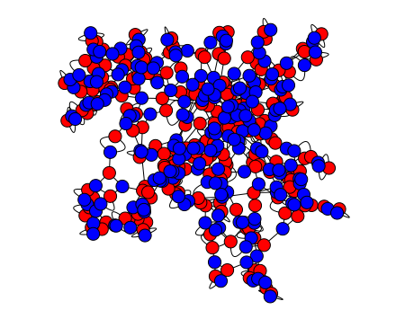

A family of graph is an infinite set of graphs which can be indexed by fixed
number of parameters, e.g. two integer parameters. (A method whose name starts
with a small letter does not return a single graph object but a graph iterator
or a list of graphs or …)
These graphs are generated by geometric representations. The objects of
the representation correspond to the graph vertices and the intersections
of objects yield the graph edges.
A class consisting of constructors for several common graphs, as well as
orderly generation of isomorphism class representatives. See the
module'shelp for a list of supported
constructors.
A list of all graphs and graph structures (other than isomorphism class
representatives) in this database is available via tab completion. Type
“graphs.” and then hit the tab key to see which graphs are available.
The docstrings include educational information about each named
graph with the hopes that this class can be used as a reference.
For all the constructors in this class (except the octahedral,
dodecahedral, random and empty graphs), the position dictionary is
filled to override the spring-layout algorithm.
This syntax accesses the generator of isomorphism class
representatives. Iterates over distinct, exhaustive
representatives.
Also: see the use of the nauty package for generating graphs
at the nauty_geng() method.
INPUT:
vertices – a natural number or None to infinitely generate
bigger and bigger graphs.
property – (default: lambdax:True) any property to be
tested on graphs before generation, but note that in general the
graphs produced are not the same as those produced by using the
property function to filter a list of graphs produced by using
the lambdax:True default. The generation process assumes
the property has certain characteristics set by the augment
argument, and only in the case of inherited properties such that
all subgraphs of the relevant kind (for augment='edges' or
augment='vertices') of a graph with the property also
possess the property will there be no missing graphs. (The
property argument is ignored if degree_sequence is
specified.)
augment – (default: 'edges') possible values:
'edges' – augments a fixed number of vertices by
adding one edge. In this case, all graphs on exactlyn=vertices are
generated. If for any graph G satisfying the property, every
subgraph, obtained from G by deleting one edge but not the vertices
incident to that edge, satisfies the property, then this will
generate all graphs with that property. If this does not hold, then
all the graphs generated will satisfy the property, but there will
be some missing.
'vertices' – augments by adding a vertex and
edges incident to that vertex. In this case, all graphs up ton=vertices are generated. If for any graph G satisfying the
property, every subgraph, obtained from G by deleting one vertex
and only edges incident to that vertex, satisfies the property,
then this will generate all graphs with that property. If this does
not hold, then all the graphs generated will satisfy the property,
but there will be some missing.
size – (default: None) the size of the graph to be generated.
degree_sequence – (default: None) a sequence of non-negative integers,
or None. If specified, the generated graphs will have these
integers for degrees. In this case, property and size are both
ignored.
loops – (default: False) whether to allow loops in the graph
or not.
sparse – (default: True); whether to use a sparse or dense data
structure. See the documentation of Graph.
copy (boolean) – If set to True (default)
this method makes copies of the graphs before returning
them. If set to False the method returns the graph it
is working on. The second alternative is faster, but modifying
any of the graph instances returned by the method may break
the function’s behaviour, as it is using these graphs to
compute the next ones: only use copy=False when
you stick to reading the graphs returned.
EXAMPLES:
Print graphs on 3 or less vertices:
sage: forGingraphs(3,augment='vertices'):....: print(G)Graph on 0 verticesGraph on 1 vertexGraph on 2 verticesGraph on 3 verticesGraph on 3 verticesGraph on 3 verticesGraph on 2 verticesGraph on 3 vertices
Print graphs on 3 vertices.
sage: forGingraphs(3):....: print(G)Graph on 3 verticesGraph on 3 verticesGraph on 3 verticesGraph on 3 vertices
Generate all graphs with 5 vertices and 4 edges.
sage: L=graphs(5,size=4)sage: len(list(L))6
Generate all graphs with 5 vertices and up to 4 edges.
sage: L=list(graphs(5,lambdaG:G.size()<=4))sage: len(L)14sage: graphs_list.show_graphs(L)# long time
Generate all graphs with up to 5 vertices and up to 4 edges.
sage: L=list(graphs(5,lambdaG:G.size()<=4,augment='vertices'))sage: len(L)31sage: graphs_list.show_graphs(L)# long time
Generate all graphs with degree at most 2, up to 6 vertices.
sage: foriin[4,6,8]:# long time (4s on sage.math, 2012)....: print((i,len([gforgingraphs(i,degree_sequence=[3]*i)ifg.is_connected()])))(4, 1)(6, 2)(8, 5)sage: foriin[4,6,8]:# long time (7s on sage.math, 2012)....: print((i,len([gforgingraphs(i,augment='vertices',degree_sequence=[3]*i)ifg.is_connected()])))(4, 1)(6, 2)(8, 5)
sage: print((10,len([gforgingraphs(10,degree_sequence=[3]*10)ifg.is_connected()])))# not tested(10, 19)
Make sure that the graphs are really independent and the generator
survives repeated vertex removal (trac ticket #8458):
Return the affine polar graph \(VO^+(d,q),VO^-(d,q)\) or \(VO(d,q)\).
Affine Polar graphs are built from a \(d\)-dimensional vector space over
\(F_q\), and a quadratic form which is hyperbolic, elliptic or parabolic
according to the value of sign.
Note that \(VO^+(d,q),VO^-(d,q)\) are strongly regular graphs, while \(VO(d,q)\)
is not.
Return African states as a graph of common border.
“African state” here is defined as an independent state having the capital
city in Africa. The graph has an edge between those countries that have
common land border.
INPUT:
continental – boolean (default: False); whether to only return
states in the continental Africa or all African states
year – integer (default: 2018); reserved for future use
Return the collinearity graph of the generalized quadrangle \(AS(q)\), or of
its dual
Let \(q\) be an odd prime power. \(AS(q)\) is a generalized quadrangle
(Wikipedia article Generalized_quadrangle) of
order \((q-1,q+1)\), see 3.1.5 in [PT2009]. Its points are elements
of \(F_q^3\), and lines are sets of size \(q\) of the form
\(\{ (\sigma, a, b) \mid \sigma\in F_q \}\)
\(\{ (a, \sigma, b) \mid \sigma\in F_q \}\)
\(\{ (c \sigma^2 - b \sigma + a, -2 c \sigma + b, \sigma) \mid \sigma\in F_q \}\),
where \(a\), \(b\), \(c\) are arbitrary elements of \(F_q\).
INPUT:
q – a power of an odd prime number
dual – boolean (default: False); whether to return the
collinearity graph of \(AS(q)\) or of the dual \(AS(q)\) (when True)
Return the alternating forms graph with the given parameters.
This builds a graph whose vertices are all \(n\) skew-symmetric
matrices over \(GF(q)\) with zero diagonal. Two vertices are adjacent
if and only if the difference of the two matrices has rank 2.
This grap is distance-regular with classical parameters
\((\lfloor \frac n 2 \rfloor, q^2, q^2 - 1, q^{2 \lceil \frac n 2 \rceil -1})\).
INPUT:
n – integer
q – a prime power
EXAMPLES:
sage: G=graphs.AlternatingFormsGraph(5,2)# long timesage: G.is_distance_regular(True)# long time([155, 112, None], [None, 1, 20])
REFERENCES:
See [BCN1989] pp. 282-284 for a rather detailed discussion, otherwise
see [VDKT2016] p. 22.
The default embedding gives a deeper understanding of the graph’s
automorphism group. It is divided into 4 layers (each layer being a set of
points at equal distance from the drawing’s center). From outside to inside:
L1: The outer layer (vertices which are the furthest from the origin) is
actually the disjoint union of two cycles of length 10.
L2: The second layer is an independent set of 20 vertices.
L3: The third layer is a matching on 10 vertices.
L4: The inner layer (vertices which are the closest from the origin) is
also the disjoint union of two cycles of length 10.
This graph is not vertex-transitive, and its vertices are partitioned into 3
orbits: L2, L3, and the union of L1 of L4 whose elements are equivalent.
INPUT:
embedding – integer (default: 1); two embeddings are available,
and can be selected by setting embedding to be either 1 or 2
EXAMPLES:
sage: g=graphs.Balaban10Cage()sage: g.girth()10sage: g.chromatic_number()2sage: g.diameter()6sage: g.is_hamiltonian()Truesage: g.show(figsize=[10,10])# long time
embedding – integer (default: 1); three embeddings are available,
and can be selected by setting embedding to be 1, 2, or 3
The first embedding is the one appearing on page 9 of the Fifth Annual
Graph Drawing Contest report [EMMN1998]. It separates vertices based on
their eccentricity (see eccentricity()).
The second embedding has been produced just for Sage and is meant to
emphasize the automorphism group’s 6 orbits.
The last embedding is the default one produced by the LCFGraph()
constructor.
Note
The vertex labeling changes according to the value of embedding=1.
sage: g1=graphs.Balaban11Cage(embedding=1)sage: g2=graphs.Balaban11Cage(embedding=2)sage: g3=graphs.Balaban11Cage(embedding=3)sage: g1.show(figsize=[10,10])# long timesage: g2.show(figsize=[10,10])# long timesage: g3.show(figsize=[10,10])# long time
Proof that the embeddings are the same graph:
sage: g1.is_isomorphic(g2)# g2 and g3 are obviously isomorphicTrue
Returns the perfectly balanced tree of height \(h \geq 1\),
whose root has degree \(r \geq 2\).
The number of vertices of this graph is
\(1 + r + r^2 + \cdots + r^h\), that is,
\(\frac{r^{h+1} - 1}{r - 1}\). The number of edges is one
less than the number of vertices.
INPUT:
r – positive integer \(\geq 2\). The degree of the root node.
h – positive integer \(\geq 1\). The height of the balanced tree.
OUTPUT:
The perfectly balanced tree of height \(h \geq 1\) and whose root has
degree \(r \geq 2\). A NetworkXError is returned if \(r < 2\) or
\(h < 1\).
Returns a barbell graph with 2*n1+n2 nodes. The argument n1
must be greater than or equal to 2.
A barbell graph is a basic structure that consists of a path graph
of order n2 connecting two complete graphs of order n1 each.
INPUT:
n1 – integer \(\geq 2\). The order of each of the two
complete graphs.
n2 – nonnegative integer. The order of the path graph
connecting the two complete graphs.
OUTPUT:
A barbell graph of order 2*n1+n2. A ValueError is
returned if n1<2 or n2<0.
PLOTTING:
Upon construction, the position dictionary is filled to
override the spring-layout algorithm. By convention, each barbell
graph will be displayed with the two complete graphs in the
lower-left and upper-right corners, with the path graph connecting
diagonally between the two. Thus the n1-th node will be drawn at a
45 degree angle from the horizontal right center of the first
complete graph, and the n1+n2+1-th node will be drawn 45
degrees below the left horizontal center of the second complete graph.
EXAMPLES:
Construct and show a barbell graph Bar=4, Bells=9:
sage: g=graphs.BarbellGraph(9,4);gBarbell graph: Graph on 22 verticessage: g.show()# long time
An n1>=2, n2>=0 barbell graph has order 2*n1+n2. It
has the complete graph on n1 vertices as a subgraph. It also has
the path graph on n2 vertices as a subgraph.
embedding – integer (default: 1); two embeddings are available,
and can be selected by setting embedding to be 1 or 2
EXAMPLES:
Basic properties:
sage: g=graphs.BiggsSmithGraph()sage: g.order()102sage: g.size()153sage: g.girth()9sage: g.diameter()7sage: g.automorphism_group().cardinality()# long time2448sage: g.show(figsize=[10,10])# long time
The other embedding:
sage: graphs.BiggsSmithGraph(embedding=2).show()# long time
Return the \(d\)-dimensional Bishop Graph with prescribed dimensions.
The 2-dimensional Bishop Graph of parameters \(n\) and \(m\) is a graph with
\(nm\) vertices in which each vertex represents a square in an \(n \times m\)
chessboard, and each edge corresponds to a legal move by a bishop.
The \(d\)-dimensional Bishop Graph with \(d >= 2\) has for vertex set the cells
of a \(d\)-dimensional grid with prescribed dimensions, and each edge
corresponds to a legal move by a bishop in any pairs of dimensions.
The Bishop Graph is not connected.
INPUT:
dim_list – iterable (list, set, dict); provides the dimensions
\(n_1, n_2, \ldots, n_d\), with \(n_i \geq 1\), of the chessboard
radius – integer (default: None); by setting the radius to a
positive integer, one may decrease the power of the bishop to at most
radius steps.
relabel – boolean (default: False); indicates whether the
vertices must be relabeled as integers
The Brouwer-Haemers is the only strongly regular graph of parameters
\((81,20,1,6)\). It is build in Sage as the Affine Orthogonal graph
\(VO^-(6,3)\). For more information on this graph, see its corresponding page
on Andries Brouwer’s website.
EXAMPLES:
sage: g=graphs.BrouwerHaemersGraph()sage: gBrouwer-Haemers: Graph on 81 vertices
It is indeed strongly regular with parameters \((81,20,1,6)\):
sage: g.is_strongly_regular(parameters=True)# long time(81, 20, 1, 6)
The vertices of the bubble sort graph are the set of permutations
on \(n\) symbols. Two vertices are adjacent if one can be obtained
from the other by swapping the labels in the \(i\)-th and \((i+1)\)-th
positions for \(1 \leq i \leq n-1\). In total, \(B(n)\) has order
\(n!\). Swapping two labels as described previously corresponds to
multiplying on the right the permutation corresponding to the node
by an elementary transposition in the
SymmetricGroup.
The bubble sort graph is the underlying graph of the
permutahedron().
INPUT:
n – positive integer. The number of symbols to permute.
OUTPUT:
The bubble sort graph \(B(n)\) on \(n\) symbols. If \(n < 1\), a
ValueError is returned.
EXAMPLES:
sage: g=graphs.BubbleSortGraph(4);gBubble sort: Graph on 24 verticessage: g.plot()# long timeGraphics object consisting of 61 graphics primitives
The bubble sort graph on \(n = 1\) symbol is the trivial graph \(K_1\):
sage: graphs.BubbleSortGraph(1)Bubble sort: Graph on 1 vertex
If \(n \geq 1\), then the order of \(B(n)\) is \(n!\):
This graph is a 3-regular 60-vertex planar graph. Its vertices and edges
correspond precisely to the carbon atoms and bonds in buckminsterfullerene.
When embedded on a sphere, its 12 pentagon and 20 hexagon faces are arranged
exactly as the sections of a soccer ball.
EXAMPLES:
The Bucky Ball is planar:
sage: g=graphs.BuckyBall()sage: g.is_planar()True
The Bucky Ball can also be created by extracting the 1-skeleton of the Bucky
Ball polyhedron, but this is much slower:
A bull graph is named for its shape. It’s a triangle with horns.
See the Wikipedia article Bull_graph for more information.
PLOTTING:
Upon construction, the position dictionary is filled to override the
spring-layout algorithm. By convention, the bull graph is drawn as a
triangle with the first node (0) on the bottom. The second and third nodes
(1 and 2) complete the triangle. Node 3 is the horn connected to 1 and node
4 is the horn connected to node 2.
EXAMPLES:
Construct and show a bull graph:
sage: g=graphs.BullGraph();gBull graph: Graph on 5 verticessage: g.show()# long time
The bull graph has 5 vertices and 5 edges. Its radius is 2, its
diameter 3, and its girth 3. The bull graph is planar with chromatic
number 3 and chromatic index also 3:
The bull graph has chromatic polynomial \(x(x - 2)(x - 1)^3\) and
Tutte polynomial \(x^4 + x^3 + x^2 y\). Its characteristic polynomial
is \(x(x^2 - x - 3)(x^2 + x - 1)\), which follows from the definition of
characteristic polynomials for graphs, i.e. \(\det(xI - A)\), where
\(x\) is a variable, \(A\) the adjacency matrix of the graph, and \(I\)
the identity matrix of the same dimensions as \(A\):
Let \(C_3\) be the cycle graph on 3 vertices. The butterfly or bowtie
graph is obtained by joining two copies of \(C_3\) at a common vertex,
resulting in a graph that is isomorphic to the friendship graph \(F_2\).
See the Wikipedia article Butterfly_graph for more information.
Return the a Cai-Furer-Immerman graph from \(G\), possibly a twisted
one, and a partition of its nodes.
A Cai-Furer-Immerman graph from/on \(G\) is a graph created by
applying the transformation described in [CFI1992] on a graph
\(G\), that is substituting every vertex v in \(G\) with a
Furer gadget \(F(v)\) of order d equal to the degree of the vertex,
and then substituting every edge \((v,u)\) in \(G\)
with a pair of edges, one connecting the two “a” nodes of
\(F(v)\) and \(F(u)\) and the other their two “b” nodes.
The returned coloring of the vertices is made by the union of the
colorings of each single Furer gadget, individualised for each
vertex of \(G\).
To understand better what these “a” and “b” nodes are, see the
documentation on Furer gadgets.
Furthermore, this method can apply what is described in the paper
mentioned above as a “twist” on an edge, that is taking only one of
the pairs of edges introduced in the new graph and swap two of their
extremes, making each edge go from an “a” node to a “b” node.
This is only doable if the original graph G is connected.
A CaiFurerImmerman graph on a graph with no balanced vertex
separators smaller than s and its twisted version
cannot be distinguished by k-WL for any k < s.
INPUT:
G – An undirected graph on which to construct the
Cai-Furer-Immerman graph
twisted – A boolean indicating if the version to construct
is a twisted one or not
OUTPUT:
H – The Cai-Furer-Immerman graph on G
coloring – A list of list of vertices, representing the
partition induced by the coloring on H
EXAMPLES:
CaiFurerImmerman graph with no balanced vertex separator smaller
than 2
Return a Graph built on a \(d\)-dimensional chessboard with prescribed
dimensions and interconnections.
This function allows to generate many kinds of graphs corresponding to legal
movements on a \(d\)-dimensional chessboard: Queen Graph, King Graph, Knight
Graphs, Bishop Graph, and many generalizations. It also allows to avoid
redundant code.
INPUT:
dim_list – iterable (list, set, dict); provides the dimensions
\(n_1, n_2, \ldots, n_d\), with \(n_i \geq 1\), of the chessboard
rook – boolean (default: True); indicates whether the chess piece
is able to move as a rook, that is at any distance along a dimension
rook_radius – integer (default: None); restriction on the
rook-like movements to distance at most rook_radius
bishop – boolean (default: True); indicates whether the chess
piece is able to move like a bishop, that is along diagonals
bishop_radius – integer (default: None); restriction on the
bishop-like movements to distance at most bishop_radius
knight – boolean (default: True); indicating whether the chess
piece is able to move like a knight
knight_x – integer (default: 1); indicates the number on steps
the chess piece moves in one dimension when moving like a knight
knight_y – integer (default: 2); indicates the number on steps
the chess piece moves in the second dimension when moving like a knight
relabel – boolean (default: False); indicates whether the
vertices must be relabeled as integers
OUTPUT:
A Graph build on a \(d\)-dimensional chessboard with prescribed dimensions,
and with edges according given parameters.
A string encoding the dimensions. This is mainly useful for providing
names to graphs.
EXAMPLES:
A \((2,2)\)-King Graph is isomorphic to the complete graph on 4 vertices:
Chvatal graph is one of the few known graphs to satisfy Grunbaum’s
conjecture that for every \(m\), \(n\), there is an \(m\)-regular, \(m\)-chromatic
graph of girth at least \(n\). For more information, see the
Wikipedia article Chv%C3%A1tal_graph.
EXAMPLES:
The Chvatal graph has 12 vertices and 24 edges. It is a 4-regular,
4-chromatic graph with radius 2, diameter 2, and girth 4:
A circulant graph has the property that the vertex \(i\) is connected
with the vertices \(i+j\) and \(i-j\) for each j in adjacency.
INPUT:
n - number of vertices in the graph
adjacency - the list of j values
PLOTTING: Upon construction, the position dictionary is filled to
override the spring-layout algorithm. By convention, each circulant
graph will be displayed with the first (0) node at the top, with
the rest following in a counterclockwise manner.
Filling the position dictionary in advance adds O(n) to the
constructor.
EXAMPLES: Compare plotting using the predefined layout and
networkx:
sage: importnetworkxsage: n=networkx.cycle_graph(23)sage: spring23=Graph(n)sage: posdict23=graphs.CirculantGraph(23,2)sage: spring23.show()# long timesage: posdict23.show()# long time
We next view many cycle graphs as a Sage graphics array. First we
use the CirculantGraph constructor, which fills in
the position dictionary:
sage: g=[]sage: j=[]sage: foriinrange(9):....: k=graphs.CirculantGraph(i+4,i+1)....: g.append(k)sage: foriinrange(3):....: n=[]....: forminrange(3):....: n.append(g[3*i+m].plot(vertex_size=50,vertex_labels=False))....: j.append(n)sage: G=graphics_array(j)sage: G.show()# long time
Compare to plotting with the spring-layout algorithm:
sage: g=[]sage: j=[]sage: foriinrange(9):....: spr=networkx.cycle_graph(i+3)....: k=Graph(spr)....: g.append(k)sage: foriinrange(3):....: n=[]....: forminrange(3):....: n.append(g[3*i+m].plot(vertex_size=50,vertex_labels=False))....: j.append(n)sage: G=graphics_array(j)sage: G.show()# long time
Return a circular ladder graph with \(2 * n\) nodes.
A Circular ladder graph is a ladder graph that is connected at the ends,
i.e.: a ladder bent around so that top meets bottom. Thus it can be
described as two parallel cycle graphs connected at each corresponding node
pair.
PLOTTING: Upon construction, the position dictionary is filled to override
the spring-layout algorithm. By convention, the circular ladder graph is
displayed as an inner and outer cycle pair, with the first \(n\) nodes drawn
on the inner circle. The first (0) node is drawn at the top of the
inner-circle, moving clockwise after that. The outer circle is drawn with
the \((n+1)\), we rotate the outer circle by an angle of \(\pi/8\) to ensure
that all edges are visible (otherwise the 4 vertices of the graph would be
placed on a single line).
EXAMPLES:
Construct and show a circular ladder graph with 26 nodes:
sage: g=graphs.CircularLadderGraph(13)sage: g.show()# long time
Create several circular ladder graphs in a Sage graphics array:
sage: g=[]sage: j=[]sage: foriinrange(9):....: k=graphs.CircularLadderGraph(i+3)....: g.append(k)sage: foriinrange(3):....: n=[]....: forminrange(3):....: n.append(g[3*i+m].plot(vertex_size=50,vertex_labels=False))....: j.append(n)sage: G=graphics_array(j)sage: G.show()# long time
sage: g=graphs.ClebschGraph()sage: g.automorphism_group().cardinality()1920sage: g.girth()4sage: g.chromatic_number()4sage: g.diameter()2sage: g.show(figsize=[10,10])# long time
staticCompleteBipartiteGraph(p, q, set_position=True)¶
Return a Complete Bipartite Graph on \(p + q\) vertices.
A Complete Bipartite Graph is a graph with its vertices partitioned into two
groups, \(V_1 = \{0,...,p-1\}\) and \(V_2 = \{p,...,p+q-1\}\). Each \(u \in
V_1\) is connected to every \(v \in V_2\).
INPUT:
p,q – number of vertices in each side
set_position – boolean (default True); if set to True, we
assign positions to the vertices so that the set of cardinality \(p\) is
on the line \(y=1\) and the set of cardinality \(q\) is on the line \(y=0\).
PLOTTING: Upon construction, the position dictionary is filled to override
the spring-layout algorithm. By convention, each complete bipartite graph
will be displayed with the first \(p\) nodes on the top row (at \(y=1\)) from
left to right. The remaining \(q\) nodes appear at \(y=0\), also from left to
right. The shorter row (partition with fewer nodes) is stretched to the same
length as the longer row, unless the shorter row has 1 node; in which case
it is centered. The \(x\) values in the plot are in domain \([0, \max(p, q)]\).
In the Complete Bipartite graph, there is a visual difference in using the
spring-layout algorithm vs. the position dictionary used in this
constructor. The position dictionary flattens the graph and separates the
partitioned nodes, making it clear which nodes an edge is connected to. The
Complete Bipartite graph plotted with the spring-layout algorithm tends to
center the nodes in \(p\) (see spring_med in examples below), thus
overlapping its nodes and edges, making it typically hard to decipher.
Filling the position dictionary in advance adds \(O(n)\) to the constructor.
Feel free to race the constructors below in the examples section. The much
larger difference is the time added by the spring-layout algorithm when
plotting. (Also shown in the example below). The spring model is typically
described as \(O(n^3)\), as appears to be the case in the NetworkX source
code.
EXAMPLES:
Two ways of constructing the complete bipartite graph, using different
layout algorithms:
sage: importnetworkxsage: n=networkx.complete_bipartite_graph(389,157);spring_big=Graph(n)# long timesage: posdict_big=graphs.CompleteBipartiteGraph(389,157)# long time
A Complete Graph is a graph in which all nodes are connected to all
other nodes.
PLOTTING: Upon construction, the position dictionary is filled to
override the spring-layout algorithm. By convention, each complete
graph will be displayed with the first (0) node at the top, with
the rest following in a counterclockwise manner.
In the complete graph, there is a big difference visually in using
the spring-layout algorithm vs. the position dictionary used in
this constructor. The position dictionary flattens the graph,
making it clear which nodes an edge is connected to. But the
complete graph offers a good example of how the spring-layout
works. The edges push outward (everything is connected), causing
the graph to appear as a 3-dimensional pointy ball. (See examples
below).
EXAMPLES:
We view many Complete graphs with a Sage Graphics Array, first with this
constructor (i.e., the position dictionary filled):
sage: g=[]sage: j=[]sage: foriinrange(9):....: k=graphs.CompleteGraph(i+3)....: g.append(k)sage: foriinrange(3):....: n=[]....: forminrange(3):....: n.append(g[3*i+m].plot(vertex_size=50,vertex_labels=False))....: j.append(n)sage: G=graphics_array(j)sage: G.show()# long time
We compare to plotting with the spring-layout algorithm:
sage: importnetworkxsage: g=[]sage: j=[]sage: foriinrange(9):....: spr=networkx.complete_graph(i+3)....: k=Graph(spr)....: g.append(k)sage: foriinrange(3):....: n=[]....: forminrange(3):....: n.append(g[3*i+m].plot(vertex_size=50,vertex_labels=False))....: j.append(n)sage: G=graphics_array(j)sage: G.show()# long time
sage: importnetworkxsage: n=networkx.complete_graph(23)sage: spring23=Graph(n)sage: posdict23=graphs.CompleteGraph(23)sage: spring23.show()# long timesage: posdict23.show()# long time
l – a list of integers; the respective sizes of the components
PLOTTING: Produce a layout of the vertices so that vertices in the same
vertex set are adjacent and clearly separated from vertices in other vertex
sets.
This is done by calculating the vertices of an \(r\)-gon then calculating the
slope between adjacent vertices. We then ‘walk’ around the \(r\)-gon placing
graph vertices in regular intervals between adjacent vertices of the
\(r\)-gon.
Return the Cossidente-Penttila
\(((q^3+1)(q+1)/2,(q^2+1)(q-1)/2,(q-3)/2,(q-1)^2/2)\)-strongly regular graph
For each odd prime power \(q\), one can partition the points of the
\(O_6^-(q)\)-generalized quadrangle \(GQ(q,q^2)\) into two parts, so that on any
of them the induced subgraph of the point graph of the GQ has parameters as
above [CP2005].
Directly following the construction in [CP2005] is not efficient, as one
then needs to construct the dual \(GQ(q^2,q)\). Thus we describe here a more
efficient approach that we came up with, following a suggestion by
T.Penttila. Namely, this partition is invariant under the subgroup
\(H=\Omega_3(q^2)<O_6^-(q)\). We build the appropriate \(H\), which leaves the
form \(B(X,Y,Z)=XY+Z^2\) invariant, and pick up two orbits of \(H\) on the
\(F_q\)-points. One them is \(B\)-isotropic, and we take the representative
\((1:0:0)\). The other one corresponds to the points of \(PG(2,q^2)\) that have
all the lines on them either missing the conic specified by \(B\), or
intersecting the conic in two points. We take \((1:1:e)\) as the
representative. It suffices to pick \(e\) so that \(e^2+1\) is not a square in
\(F_{q^2}\). Indeed, The conic can be viewed as the union of \(\{(0:1:0)\}\) and
\(\{(1:-t^2:t) | t \in F_{q^2}\}\). The coefficients of a generic line on
\((1:1:e)\) are \([1:-1-eb:b]\), for \(-1\neq eb\). Thus, to make sure the
intersection with the conic is always even, we need that the discriminant of
\(1+(1+eb)t^2+tb=0\) never vanishes, and this is if and only if \(e^2+1\) is not
a square. Further, we need to adjust \(B\), by multiplying it by appropriately
chosen \(\nu\), so that \((1:1:e)\) becomes isotropic under the relative trace
norm \(\nu B(X,Y,Z)+(\nu B(X,Y,Z))^q\). The latter is used then to define the
graph.
sage: g=graphs.CoxeterGraph()sage: g.automorphism_group().cardinality()336sage: g.girth()7sage: g.chromatic_number()3sage: g.diameter()4sage: g.show(figsize=[10,10])# long time
Return the cube-connected cycle of dimension \(d\).
The cube-connected cycle of order \(d\) is the \(d\)-dimensional hypercube
with each of its vertices replaced by a cycle of length \(d\). This graph has
order \(d \times 2^d\).
The construction is as follows:
Construct vertex \((x,y)\) for \(0 \leq x < 2^d\), \(0 \leq y < d\).
For each vertex, \((x,y)\), add an edge between it and \((x, (y-1) \mod d))\),
\((x,(y+1) \mod d)\), and \((x \oplus 2^y, y)\), where \(\oplus\) is the bitwise
xor operator.
For \(d=1\) and \(2\), the cube-connected cycle graph contains self-loops or
multiple edges between a pair of vertices, but for all other \(d\), it is
simple.
INPUT:
d – The dimension of the desired hypercube as well as the length
of the cycle to be placed at each vertex of the \(d\)-dimensional
hypercube. \(d\) must be a positive integer.
Return the \(n\)-cube graph, also called the hypercube in \(n\) dimensions.
The hypercube in \(n\) dimension is build upon the binary strings on \(n\) bits,
two of them being adjacent if they differ in exactly one bit. Hence, the
distance between two vertices in the hypercube is the Hamming distance.
INPUT:
n – integer; the dimension of the cube graph
embedding – integer (default: 1); two embeddings of the \(n\)-cube
are available:
1: the \(n\)-cube is projected inside a regular \(2n\)-gonal polygon by
a skew orthogonal projection. See the Wikipedia article Hypercube for more
details.
2: orthogonal projection of the \(n\)-cube. This orientation shows
columns of independent vertices such that the neighbors of a vertex are
located in the columns on the left and on the right. The number of
vertices in each column represents rows in Pascal’s triangle. See for
instance the Wikipedia article 10-cube for more details.
None or O: no embedding is provided
EXAMPLES:
The distance between \(0100110\) and \(1011010\) is \(5\), as expected:
Plot several \(n\)-cubes in a Sage Graphics Array:
sage: g=[]sage: j=[]sage: foriinrange(6):....: k=graphs.CubeGraph(i+1)....: g.append(k)...sage: foriinrange(2):....: n=[]....: forminrange(3):....: n.append(g[3*i+m].plot(vertex_size=50,vertex_labels=False))....: j.append(n)...sage: G=graphics_array(j)sage: G.show(figsize=[6,4])# long time
Use the plot options to display larger \(n\)-cubes:
sage: g=graphs.CubeGraph(9,embedding=1)sage: g.show(figsize=[12,12],vertex_labels=False,vertex_size=20)# long timesage: g=graphs.CubeGraph(9,embedding=2)sage: g.show(figsize=[12,12],vertex_labels=False,vertex_size=20)# long time
A cycle graph is a basic structure which is also typically called an
\(n\)-gon.
PLOTTING: Upon construction, the position dictionary is filled to override
the spring-layout algorithm. By convention, each cycle graph will be
displayed with the first (0) node at the top, with the rest following in a
counterclockwise manner.
The cycle graph is a good opportunity to compare efficiency of filling a
position dictionary vs. using the spring-layout algorithm for
plotting. Because the cycle graph is very symmetric, the resulting plots
should be similar (in cases of small \(n\)).
Filling the position dictionary in advance adds \(O(n)\) to the constructor.
EXAMPLES:
Compare plotting using the predefined layout and networkx:
sage: importnetworkxsage: n=networkx.cycle_graph(23)sage: spring23=Graph(n)sage: posdict23=graphs.CycleGraph(23)sage: spring23.show()# long timesage: posdict23.show()# long time
We next view many cycle graphs as a Sage graphics array. First we use the
CycleGraph constructor, which fills in the position dictionary:
sage: g=[]sage: j=[]sage: foriinrange(9):....: k=graphs.CycleGraph(i+3)....: g.append(k)sage: foriinrange(3):....: n=[]....: forminrange(3):....: n.append(g[3*i+m].plot(vertex_size=50,vertex_labels=False))....: j.append(n)sage: G=graphics_array(j)sage: G.show()# long time
Compare to plotting with the spring-layout algorithm:
sage: g=[]sage: j=[]sage: foriinrange(9):....: spr=networkx.cycle_graph(i+3)....: k=Graph(spr)....: g.append(k)sage: foriinrange(3):....: n=[]....: forminrange(3):....: n.append(g[3*i+m].plot(vertex_size=50,vertex_labels=False))....: j.append(n)sage: G=graphics_array(j)sage: G.show()# long time
PLOTTING: Upon construction, the position dictionary is filled to override
the spring-layout algorithm. By convention, the dart graph is drawn as a
dart, with the sharp part on the bottom.
EXAMPLES:
Construct and show a dart graph:
sage: g=graphs.DartGraph()sage: g.show()# long time
This method raises a NetworkX error if the proposed degree sequence cannot
be that of a graph.
Graph returned is the one returned by the Havel-Hakimi algorithm, which
constructs a simple graph by connecting vertices of highest degree to other
vertices of highest degree, resorting the remaining vertices by degree and
repeating the process. See Theorem 1.4 in [CL1996].
INPUT:
deg_sequence – list of integers with each entry corresponding to the
degree of a different vertex
EXAMPLES:
sage: G=graphs.DegreeSequence([3,3,3,3])sage: G.edges(labels=False)[(0, 1), (0, 2), (0, 3), (1, 2), (1, 3), (2, 3)]sage: G.show()# long time
sage: G=graphs.DegreeSequence([3,3,3,3,3,3,3,3,3,3,3,3,3,3,3,3,3,3,3,3,3,3])sage: G.show()# long time
sage: G=graphs.DegreeSequence([4,4,4,4,4,4,4,4])sage: G.show()# long time
sage: G=graphs.DegreeSequence([1,2,3,4,3,4,3,2,3,2,1])sage: G.show()# long time
Return a bipartite graph whose two sets have the given degree sequences.
Given two different sequences of degrees \(s_1\) and \(s_2\), this functions
returns ( if possible ) a bipartite graph on sets \(A\) and \(B\) such that the
vertices in \(A\) have \(s_1\) as their degree sequence, while \(s_2\) is the
degree sequence of the vertices in \(B\).
INPUT:
s_1 – list of integers corresponding to the degree sequence of the
first set of vertices
s_2 – list of integers corresponding to the degree sequence of the
second set of vertices
ALGORITHM:
This function works through the computation of the matrix given by the
Gale-Ryser theorem, which is in this case the adjacency matrix of the
bipartite graph.
EXAMPLES:
If we are given as sequences [2,2,2,2,2] and [5,5] we are given as
expected the complete bipartite graph \(K_{2,5}\):
Some sequences being incompatible if, for example, their sums are different,
the functions raises a ValueError when no graph corresponding to the
degree sequences exists:
sage: g=graphs.DegreeSequenceBipartite([2,2,2,2,1],[5,5])Traceback (most recent call last):...ValueError: there exists no bipartite graph corresponding to the given degree sequences
The output is allowed to contain both loops and multiple edges:
sage: deg_sequence=[3,3,3,3,3,3,3,3,3,3,3,3,3,3,3,3,3,3,3,3]sage: G=graphs.DegreeSequenceConfigurationModel(deg_sequence)sage: G.order(),G.size()(20, 30)sage: G.has_loops()orG.has_multiple_edges()# randomTruesage: G.show()# long time
The Dejter graph is obtained from the binary 7-cube by deleting a copy of
the Hamming code of length 7. It is 6-regular, with 112 vertices and 336
edges. For more information, see the Wikipedia article Dejter_graph.
EXAMPLES:
sage: g=graphs.DejterGraph();gDejter Graph: Graph on 112 verticessage: g.is_regular(k=6)Truesage: g.girth()4
A diamond graph is a square with one pair of diagonal nodes connected.
PLOTTING: Upon construction, the position dictionary is filled to override
the spring-layout algorithm. By convention, the diamond graph is drawn as a
diamond, with the first node on top, second on the left, third on the right,
and fourth on the bottom; with the second and third node connected.
EXAMPLES:
Construct and show a diamond graph:
sage: g=graphs.DiamondGraph()sage: g.show()# long time
The dodecahedral graph is cubic symmetric, so the spring-layout algorithm
will be very effective for display. It is dual to the icosahedral graph.
PLOTTING: The Dodecahedral graph should be viewed in 3 dimensions. We
choose to use a planar embedding of the graph. We hope to add rotatable,
3-dimensional viewing in the future. In such a case, a argument will be
added to select the desired layout.
EXAMPLES:
Construct and show a Dodecahedral graph:
sage: g=graphs.DodecahedralGraph()sage: g.show()# long time
Create several dodecahedral graphs in a Sage graphics array They will be
drawn differently due to the use of the spring-layout algorithm:
sage: g=[]sage: j=[]sage: foriinrange(9):....: k=graphs.DodecahedralGraph()....: g.append(k)sage: foriinrange(3):....: n=[]....: forminrange(3):....: n.append(g[3*i+m].plot(vertex_size=50,vertex_labels=False))....: j.append(n)sage: G=graphics_array(j)sage: G.show()# long time
Return a double generalized Petersen graph with \(4n\) nodes.
The double generalized Petersen graphs is a family of graphs proposed in
[ZF2012] as a variant of generalized Petersen graphs. The variables \(n\),
\(k\) are integers such that \(n > 2\) and \(0 < k \leq \lfloor (n-1) / 2
\rfloor\).
INPUT:
n – the number of nodes is \(4 * n\)
k – integer such that \(0 < k \leq \lfloor (n-1) / 2 \rfloor\)
determining how vertices on second and third inner rims are connected
PLOTTING: Upon construction, the position dictionary is filled to override
the spring-layout algorithm. By convention, the double generalized Petersen
graphs are displayed as 4 cocentric cycles, with the first n nodes drawn on
the outer circle. The first (0) node is drawn at the top of the
outer-circle, moving counterclockwise after that. The second circle is drawn
with the (n)th node at the top, then counterclockwise as well. The tird
cycle is drawn with the (2n)th node at the top, then counterclockwise. And
the fourth cycle is drawn with the (3n)th node at the top, then again
counterclockwise.
EXAMPLES:
When \(n\) is even the resulting graph will be isomorphic to a double
generalized Petersen graph with \(k' = n / 2 - k\):
Return the bipartite double of the distance-\(e\) graph of the Grassmann graph \(J_q(n,e)\).
This graph can also be descirbed as follows:
Let \(V\) be the vector space of dimension \(n\) over \(GF(q)\).
The vertex set is the set of \(e+1\) or \(e\) subspaces of \(V\).
Two vertices are adjacent if one subspace is contained in the other.
The graph is obtained using the subsets of size \(n\) and \(n+1\)
of \({1, 2, ..., 2n+1}\) as vertices. Two vertices are adjacent if one
is included in the other.
Return the Egawa graph with parameters \(p\), \(s\).
Egawa graphs are a peculiar family of graphs devised by Yoshimi
Egawa in [Ega1981] .
The Shrikhande graph is a special case of this family of graphs,
with parameters \((1,0)\).
All the graphs in this family are not recognizable by 1-WL
(Weisfeiler Lehamn algorithm of the first order) and 2-WL, that is
their orbits are not correctly returned by k-WL for k lower than 3.
Furthermore, all the graphs in this family are distance-regular, but
they are not distance-transitive if \(p \neq 0\).
The Egawa graph with parameters \((0, s)\) is isomorphic to the
Hamming graph with parameters \((s, 4)\), when the underlying
set of the Hamming graph is \([0,1,2,3]\)
INPUT:
p – power to which the graph named \(Y\) in the reference
provided above will be raised
s – power to which the graph named \(X\) in the reference
Each vertex degree is either 5 or 6. That is, if \(f\) counts the number of
vertices of degree 5 and \(s\) counts the number of vertices of degree 6, then
\(f + s\) is equal to the order of the Errera graph:
Return European states as a graph of common border.
“European state” here is defined as an independent state having the capital
city in Europe. The graph has an edge between those countries that have
common land border.
INPUT:
continental – boolean (default: False); whether to only return
states in the continental Europe or all European states
year – integer (default: 2018); reserved for future use
Return the graph of the Fibonacci Tree \(F_{i}\) of order \(n\).
The Fibonacci tree \(F_{i}\) is recursively defined as the tree
with a root vertex and two attached child trees \(F_{i-1}\) and
\(F_{i-2}\), where \(F_{1}\) is just one vertex and \(F_{0}\) is empty.
A flower snark has 20 vertices. It is part of the class of biconnected cubic
graphs with edge chromatic number = 4, known as snarks. (i.e.: the Petersen
graph). All snarks are not Hamiltonian, non-planar and have Petersen graph
graph minors. See the Wikipedia article Flower_snark.
PLOTTING: Upon construction, the position dictionary is filled to override
the spring-layout algorithm. By convention, the nodes are drawn 0-14 on the
outer circle, and 15-19 in an inner pentagon.
EXAMPLES: Inspect a flower snark:
sage: F=graphs.FlowerSnark()sage: FFlower Snark: Graph on 20 verticessage: F.graph6_string()'ShCGHC@?GGg@?@?Gp?K??C?CA?G?_G?Cc'
Returns the folded cube graph of order \(2^{n-1}\).
The folded cube graph on \(2^{n-1}\) vertices can be obtained from a cube
graph on \(2^n\) vertices by merging together opposed
vertices. Alternatively, it can be obtained from a cube graph on
\(2^{n-1}\) vertices by adding an edge between opposed vertices. This
second construction is the one produced by this method.
A fork graph, sometimes also called chair graph, is 5 vertex tree.
PLOTTING: Upon construction, the position dictionary is filled to override
the spring-layout algorithm. By convention, the fork graph is drawn as a
fork, with the sharp part on the bottom.
EXAMPLES:
Construct and show a fork graph:
sage: g=graphs.ForkGraph()sage: g.show()# long time
The friendship graph is also known as the Dutch windmill graph. Let
\(C_3\) be the cycle graph on 3 vertices. Then \(F_n\) is constructed by
joining \(n \geq 1\) copies of \(C_3\) at a common vertex. If \(n = 1\),
then \(F_1\) is isomorphic to \(C_3\) (the triangle graph). If \(n = 2\),
then \(F_2\) is the butterfly graph, otherwise known as the bowtie
graph. For more information, see the Wikipedia article Friendship_graph.
INPUT:
n – positive integer; the number of copies of \(C_3\) to use in
constructing \(F_n\).
OUTPUT:
The friendship graph \(F_n\) obtained from \(n\) copies of the cycle
graph \(C_3\).
sage: A=[];B=[]sage: foriinrange(9):....: g=graphs.FriendshipGraph(i+1)....: A.append(g)sage: foriinrange(3):....: n=[]....: forjinrange(3):....: n.append(A[3*i+j].plot(vertex_size=20,vertex_labels=False))....: B.append(n)sage: G=graphics_array(B)sage: G.show()# long time
For \(n = 1\), the friendship graph \(F_1\) is isomorphic to the cycle
graph \(C_3\), whose visual representation is a triangle.
sage: G=graphs.FriendshipGraph(1);GFriendship graph: Graph on 3 verticessage: G.show()# long timesage: G.is_isomorphic(graphs.CycleGraph(3))True
For \(n = 2\), the friendship graph \(F_2\) is isomorphic to the
butterfly graph, otherwise known as the bowtie graph.
sage: G=graphs.FriendshipGraph(2);GFriendship graph: Graph on 5 verticessage: G.is_isomorphic(graphs.ButterflyGraph())True
If \(n \geq 2\), then the friendship graph \(F_n\) has \(2n + 1\) vertices
and \(3n\) edges. It has radius 1, diameter 2, girth 3, and
chromatic number 3. Furthermore, \(F_n\) is planar and Eulerian.
A Frucht graph has 12 nodes and 18 edges. It is the smallest cubic identity
graph. It is planar and Hamiltonian. See the Wikipedia article Frucht_graph.
PLOTTING: Upon construction, the position dictionary is filled to override
the spring-layout algorithm. By convention, the first seven nodes are on the
outer circle, with the next four on an inner circle and the last in the
center.
EXAMPLES:
sage: FRUCHT=graphs.FruchtGraph()sage: FRUCHTFrucht graph: Graph on 12 verticessage: FRUCHT.graph6_string()'KhCKM?_EGK?L'sage: (graphs.FruchtGraph()).show()# long time
Return a Furer gadget of order k and their coloring.
Construct the Furer gadget described in [CFI1992],
a graph composed by a middle layer of \(2^(k-1)\) nodes
and two sets of nodes \((a_0, ... , a_{k-1})\) and
\((b_0, ... , b_{k-1})\).
Each node in the middle is connected to either \(a_i\) or \(b_i\),
for each i in [0,k[.
To read about the complete construction, see [CFI1992].
The returned coloring colors the middle section with one color, and
then each pair \((a_i, b_i)\) with another color.
Since this method is mainly used to create Furer gadgets for the
Cai-Furer-Immerman construction, returning gadgets that don’t
always have the same vertex labels is important, that’s why there is
a parameter to manually set a prefix to be appended to each vertex label.
INPUT:
k – The order of the returned Furer gadget, greater than 0.
prefix – Prefix of to be appended to each vertex label,
so as to individualise the returned Furer gadget.
Must be comparable for equality and hashable.
OUTPUT:
G – The Furer gadget of order k
coloring – A list of list of vertices, representing the
Construct a Fuzzy Ball graph with the integer partition
partition and q extra vertices.
Let \(q\) be an integer and let \(m_1,m_2,...,m_k\) be a set of positive
integers. Let \(n=q+m_1+...+m_k\). The Fuzzy Ball graph with partition
\(m_1,m_2,...,m_k\) and \(q\) extra vertices is the graph constructed from the
graph \(G=K_n\) by attaching, for each \(i=1,2,...,k\), a new vertex \(a_i\) to
\(m_i\) distinct vertices of \(G\).
For given positive integers \(k\) and \(m\) and nonnegative
integer \(q\), the set of graphs FuzzyBallGraph(p,q) for
all partitions \(p\) of \(m\) with \(k\) parts are cospectral with
respect to the normalized Laplacian.
Pick positive integers \(m\) and \(k\) and a nonnegative integer \(q\).
All the FuzzyBallGraphs constructed from partitions of \(m\) with
\(k\) parts should be cospectral with respect to the normalized
Laplacian:
sage: m=4;q=2;k=2sage: g_list=[graphs.FuzzyBallGraph(p,q)forpinPartitions(m,length=k)]sage: set([g.laplacian_matrix(normalized=True,vertices=list(g)).charpoly()forging_list])# long time (7s on sage.math, 2011){x^8 - 8*x^7 + 4079/150*x^6 - 68689/1350*x^5 + 610783/10800*x^4 - 120877/3240*x^3 + 1351/100*x^2 - 931/450*x}
PLOTTING: Upon construction, the position dictionary is filled to override
the spring-layout algorithm. By convention, the gem graph is drawn as a gem,
with the sharp part on the bottom.
EXAMPLES:
Construct and show a gem graph:
sage: g=graphs.GemGraph()sage: g.show()# long time
This function uses the GAP’s AtlasRep package to build GHs
of order \((q, q)\), \((q, q^3)\) or \((q^3, q)\). For those graphs you need
an internet connection and Sage’s optional package gap_packages.
REFERENCES:
See [BCN1989] pp. 200-205 for a discussion of distance-regular graphs from
generalised polygons.
This function uses the GAP’s AtlasRep package to build the graphs
of order \((2, 4)\) or \((4, 2)\). For those graphs you need an internet
connection and Sage’s optional package gap_packages.
REFERENCES:
See [BCN1989] pp. 200-205 for a discussion of distance-regular graphs from
generalised polygons.
Returns a generalized Petersen graph with \(2n\) nodes. The variables
\(n\), \(k\) are integers such that \(n>2\) and \(0<k\leq\lfloor(n-1)\)/\(2\rfloor\)
For \(k=1\) the result is a graph isomorphic to the circular ladder graph
with the same \(n\). The regular Petersen Graph has \(n=5\) and \(k=2\).
Other named graphs that can be described using this notation include
the Desargues graph and the Möbius-Kantor graph.
INPUT:
n - the number of nodes is \(2*n\).
k - integer \(0<k\leq\lfloor(n-1)\)/\(2\rfloor\). Decides
how inner vertices are connected.
PLOTTING: Upon construction, the position dictionary is filled to
override the spring-layout algorithm. By convention, the generalized
Petersen graphs are displayed as an inner and outer cycle pair, with
the first n nodes drawn on the outer circle. The first (0) node is
drawn at the top of the outer-circle, moving counterclockwise after that.
The inner circle is drawn with the (n)th node at the top, then
counterclockwise as well.
EXAMPLES: For \(k=1\) the resulting graph will be isomorphic to a circular
ladder graph.
The Golomb graph is a planar and Hamiltonian graph with 10 vertices
and 18 edges. It has chromatic number 4, diameter 3, radius 2 and
girth 3. It can be drawn in the plane as a unit distance graph:
sage: G=graphs.GolombGraph();GGolomb graph: Graph on 10 verticessage: pos=G.get_pos()sage: dist2=lambdau,v:(u[0]-v[0])**2+(u[1]-v[1])**2sage: all(dist2(pos[u],pos[v])==1foru,vinG.edge_iterator(labels=None))True
Return the Grassmann graph with parameters \((q, n, e)\).
This builds the Grassmann graph \(J_q(n,e)\). That is, for a vector
space \(V = \mathbb F(q)^n\) the output is the graph on the subspaces
of dimension \(e\) where two subspaces are adjacent if their intersection
has dimension \(e-1\).
This graph is distance-regular with classical parameters
\((\min(e, n-e), q, q, \genfrac {[}{]} {0pt} {} {n-e+1} 1 _q -1)\)
embedding – integer (default: 1); two embeddings are available,
and can be selected by setting embedding to 1 or 2
EXAMPLES:
sage: g=graphs.GrayGraph()sage: g.order()54sage: g.size()81sage: g.girth()8sage: g.diameter()6sage: g.show(figsize=[10,10])# long timesage: graphs.GrayGraph(embedding=2).show(figsize=[10,10])# long time
Return a \(2\)-dimensional grid graph with \(p \times q\) nodes (\(p\) rows and
\(q\) columns).
A 2d grid graph resembles a \(2\) dimensional grid. All inner nodes are
connected to their \(4\) neighbors. Outer (non-corner) nodes are connected to
their \(3\) neighbors. Corner nodes are connected to their 2 neighbors.
INPUT:
p and q – two positive integers
set_positions – boolean (default: True); whether to set the
position of the nodes
PLOTTING: Upon construction, the position dictionary is filled to override
the spring-layout algorithm. By convention, nodes are labelled in (row,
column) pairs with \((0, 0)\) in the top left corner. Edges will always be
horizontal and vertical - another advantage of filling the position
dictionary.
EXAMPLES:
Construct and show a grid 2d graph Rows = \(5\), Columns = \(7\):
sage: g=graphs.Grid2dGraph(5,7)sage: g.show()# long time
The Grötzsch graph is an example of a triangle-free graph with chromatic
number equal to 4. For more information, see the
Wikipedia article Gr%C3%B6tzsch_graph.
EXAMPLES:
The Grötzsch graph is named after Herbert Grötzsch. It is a Hamiltonian
graph with 11 vertices and 20 edges:
sage: G=graphs.GrotzschGraph();GGrotzsch graph: Graph on 11 verticessage: G.is_hamiltonian()Truesage: G.order()11sage: G.size()20
The Grötzsch graph is triangle-free and having radius 2, diameter 2, and
girth 4:
Return the Haemers graph obtained from \(T_2^*(q)^*\)
Let \(q\) be a power of 2. In Sect. 8.A of [BL1984] one finds a construction
of a strongly regular graph with parameters \((q^2(q+2),q^2+q-1,q-2,q)\) from
the graph of \(T_2^*(q)^*\), constructed by
T2starGeneralizedQuadrangleGraph(),
by redefining adjacencies in the way specified by an arbitrary
hyperoval_matching of the points (i.e. partitioning into size two parts)
of hyperoval defining \(T_2^*(q)^*\).
While [BL1984] gives the construction in geometric terms, it can be
formulated, and is implemented, in graph-theoretic ones, of re-adjusting the
edges. Namely, \(G=T_2^*(q)^*\) has a partition into \(q+2\) independent sets
\(I_k\) of size \(q^2\) each. Each vertex in \(I_j\) is adjacent to \(q\) vertices
from \(I_k\). Each \(I_k\) is paired to some \(I_{k'}\), according to
hyperoval_matching. One adds edges \((s,t)\) for \(s,t \in I_k\) whenever
\(s\) and \(t\) are adjacent to some \(u \in I_{k'}\), and removes all the edges
between \(I_k\) and \(I_{k'}\).
INPUT:
q – a power of two
hyperoval_matching – if None (default), pair each \(i\)-th point of
hyperoval with \((i+1)\)-th. Otherwise, specifies the pairing
in the format \(((i_1,i'_1),(i_2,i'_2),...)\).
hyperoval – a hyperoval defining \(T_2^*(q)^*\). If None (default),
the classical hyperoval obtained from a conic is used. See the
documentation of
T2starGeneralizedQuadrangleGraph(),
for more information.
field – an instance of a finite field of order \(q\), must be provided
if hyperoval is provided
check_hyperoval – boolean (default: True); whether to check
hyperoval for correctness or not
EXAMPLES:
using the built-in constructions:
sage: g=graphs.HaemersGraph(4);gHaemers(4): Graph on 96 verticessage: g.is_strongly_regular(parameters=True)(96, 19, 2, 4)
supplying your own hyperoval_matching:
sage: g=graphs.HaemersGraph(4,hyperoval_matching=((0,5),(1,4),(2,3)));gHaemers(4): Graph on 96 verticessage: g.is_strongly_regular(parameters=True)(96, 19, 2, 4)
The construction used to generate this graph in Sage is by a 100-point
permutation representation of the Janko group \(J_2\), as described in version
3 of the ATLAS of Finite Group representations, in particular on the page
ATLAS: J2 – Permutation representation on 100 points.
INPUT:
from_string – boolean (default: True); whether to build the graph
from its sparse6 string or through GAP. The two methods return the same
graph though doing it through GAP takes more time.
Returns the Hamming graph with parameters n, q over X.
Hamming graphs are graphs over the cartesian product of n copies
of X, where \(q = |X|\), where the vertices, labelled with the
corresponding tuple in \(X^n\), are connected if the Hamming distance
between their labels is 1. All Hamming graphs are regular,
vertex-transitive and distance-regular.
Hamming graphs with parameters \((1,q)\) represent the complete graph
with q vertices over the set X.
INPUT:
n – power to which X will be raised to provide vertices
for the Hamming graph
q – cardinality of X
X – list of labels representing the vertices of the
underlying graph the Hamming graph will be based on; if
None (or left unused), the list \([0, ... , q-1]\)
will be used
OUTPUT:
G – The Hamming graph with parameters \((n,q,X)\)
EXAMPLES:
Every Hamming graph is distance-regular, regular and
vertex-transitive.
Returns the graph whose vertices are the states of the
Tower of Hanoi puzzle, with edges representing legal moves between states.
INPUT:
pegs - the number of pegs in the puzzle, 2 or greater
disks - the number of disks in the puzzle, 1 or greater
labels - default: True, if True the graph contains
more meaningful labels, see explanation below. For large instances,
turn off labels for much faster creation of the graph.
positions - default: True, if True the graph contains
layout information. This creates a planar layout for the case
of three pegs. For large instances, turn off layout information
for much faster creation of the graph.
OUTPUT:
The Tower of Hanoi puzzle has a certain number of identical pegs
and a certain number of disks, each of a different radius.
Initially the disks are all on a single peg, arranged
in order of their radii, with the largest on the bottom.
The goal of the puzzle is to move the disks to any other peg,
arranged in the same order. The one constraint is that the
disks resident on any one peg must always be arranged with larger
radii lower down.
The vertices of this graph represent all the possible states
of this puzzle. Each state of the puzzle is a tuple with length
equal to the number of disks, ordered by largest disk first.
The entry of the tuple is the peg where that disk resides.
Since disks on a given peg must go down in size as we go
up the peg, this totally describes the state of the puzzle.
For example (2,0,0) means the large disk is on peg 2, the
medium disk is on peg 0, and the small disk is on peg 0
(and we know the small disk must be above the medium disk).
We encode these tuples as integers with a base equal to
the number of pegs, and low-order digits to the right.
Two vertices are adjacent if we can change the puzzle from
one state to the other by moving a single disk. For example,
(2,0,0) is adjacent to (2,0,1) since we can move
the small disk off peg 0 and onto (the empty) peg 1.
So the solution to a 3-disk puzzle (with at least
two pegs) can be expressed by the shortest path between
(0,0,0) and (1,1,1). For more on this representation
of the graph, or its properties, see [AD2010].
For greatest speed we create graphs with integer vertices,
where we encode the tuples as integers with a base equal
to the number of pegs, and low-order digits to the right.
So for example, in a 3-peg puzzle with 5 disks, the
state (1,2,0,1,1) is encoded as
\(1\ast 3^4 + 2\ast 3^3 + 0\ast 3^2 + 1\ast 3^1 + 1\ast 3^0 = 139\).
For smaller graphs, the labels that are the tuples are informative,
but slow down creation of the graph. Likewise computing layout
information also incurs a significant speed penalty. For maximum
speed, turn off labels and layout and decode the
vertices explicitly as needed. The
sage.rings.integer.Integer.digits()
with the padsto option is a quick way to do this, though you
may want to reverse the list that is output.
PLOTTING:
The layout computed when positions=True will
look especially good for the three-peg case, when the graph is known
to be planar. Except for two small cases on 4 pegs, the graph is
otherwise not planar, and likely there is a better way to layout
the vertices.
EXAMPLES:
A classic puzzle uses 3 pegs. We solve the 5 disk puzzle using
integer labels and report the minimum number of moves required.
Note that \(3^5-1\) is the state where all 5 disks
are on peg 2.
Returns the Harary graph on \(n\) vertices and connectivity \(k\), where
\(2 \leq k < n\).
A \(k\)-connected graph \(G\) on \(n\) vertices requires the minimum degree
\(\delta(G)\geq k\), so the minimum number of edges \(G\) should have is
\(\lceil kn/2\rceil\). Harary graphs achieve this lower bound, that is,
Harary graphs are minimal \(k\)-connected graphs on \(n\) vertices.
The construction provided uses the method CirculantGraph. For more
details, see the book D. B. West, Introduction to Graph Theory, 2nd
Edition, Prentice Hall, 2001, p. 150–151; or the MathWorld article on
Harary graphs.
The Harborth graph has 104 edges and 52 vertices, and is the smallest known
example of a 4-regular matchstick graph. For more information, see the
Wikipedia article Harborth_graph.
EXAMPLES:
sage: g=graphs.HarborthGraph();gHarborth Graph: Graph on 52 verticessage: g.is_regular(4)True
The default embedding here is to emphasize the graph’s 4 orbits. This graph
actually has a funny construction. The following procedure gives an idea of
it, though not all the adjacencies are being properly defined.
Take two disjoint copies of a Petersengraph. Their vertices will form an orbit of the final graph.
Subdivide all the edges once, to create 15+15=30 new vertices, which
together form another orbit.
Create 15 vertices, each of them linked to 2 corresponding vertices of
the previous orbit, one in each of the two subdivided Petersen graphs. At
the end of this step all vertices from the previous orbit have degree 3,
and the only vertices of degree 2 in the graph are those that were just
created.
Create 5 vertices connected only to the ones from the previous orbit so
that the graph becomes 3-regular.
INPUT:
embedding – integer (default: 1); two embeddings are available,
and can be selected by setting embedding to 1 or 2
EXAMPLES:
sage: g=graphs.HarriesGraph()sage: g.order()70sage: g.size()105sage: g.girth()10sage: g.diameter()6sage: g.show(figsize=[10,10])# long timesage: graphs.HarriesGraph(embedding=2).show(figsize=[10,10])# long time
The default embedding is an attempt to emphasize the graph’s 8 (!!!)
different orbits. In order to understand this better, one can picture the
graph as being built in the following way.
One first creates a 3-dimensional cube (8 vertices, 12 edges),
whose vertices define the first orbit of the final graph.
The edges of this graph are subdivided once, to create 12 new vertices
which define a second orbit.
The edges of the graph are subdivided once more, to create 24 new
vertices giving a third orbit.
4 vertices are created and made adjacent to the vertices of the second
orbit so that they have degree 3. These 4 vertices also define a new
orbit.
In order to make the vertices from the third orbit 3-regular (they all
miss one edge), one creates a binary tree on 1 + 3 + 6 + 12 vertices. The
leaves of this new tree are made adjacent to the 12 vertices of the third
orbit, and the graph is now 3-regular. This binary tree contributes 4 new
orbits to the Harries-Wong graph.
INPUT:
embedding – integer (default: 1); two embeddings are available,
and can be selected by setting embedding to 1 or 2
EXAMPLES:
sage: g=graphs.HarriesWongGraph()sage: g.order()70sage: g.size()105sage: g.girth()10sage: g.diameter()6sage: orbits=g.automorphism_group(orbits=True)[-1]# long timesage: g.show(figsize=[15,15],partition=orbits)# long time
Alternative embedding:
sage: graphs.HarriesWongGraph(embedding=2).show()# long time
The Heawood graph is a cage graph that has 14 nodes. It is a cubic symmetric
graph. (See also the Möbius-Kantor graph, MobiusKantorGraph()). It is
nonplanar and Hamiltonian. It has diameter 3, radius 3, girth 6, and
chromatic number 2. It is 4-transitive but not 5-transitive.
See the Wikipedia article Heawood_graph.
PLOTTING: Upon construction, the position dictionary is filled to override
the spring-layout algorithm. By convention, the nodes are positioned in a
circular layout with the first node appearing at the top, and then
continuing counterclockwise.
EXAMPLES:
sage: H=graphs.HeawoodGraph()sage: HHeawood graph: Graph on 14 verticessage: H.graph6_string()'MhEGHC@AI?_PC@_G_'sage: (graphs.HeawoodGraph()).show()# long time
Return the Hermitian forms graph with the given parameters.
We build a graph whose vertices are all n``x``n Hermitian matrices
over GF(r^2). Two vertices are adjacent if the difference of the two
vertices has rank 1.
This graph is distance-regular with classical parameters
\((n, - r, - r - 1, - (- r)^d - 1)\).
INPUT:
n – integer
r – a prime power
EXAMPLES:
sage: G=graphs.HermitianFormsGraph(2,2)sage: G.is_distance_regular(True)([5, 4, None], [None, 1, 2])sage: G=graphs.HermitianFormsGraph(3,3)# not tested (2 min)sage: G.order()# not tested (bacuase of the above)19683
A regular hexahedron is a 6-sided cube. The hexahedral graph corresponds to
the connectivity of the vertices of the hexahedron. This graph is
equivalent to a 3-cube.
PLOTTING: The Hexahedral graph should be viewed in 3 dimensions. We choose
to use a planar embedding of the graph. We hope to add rotatable,
3-dimensional viewing in the future. In such a case, a argument will be
added to select the desired layout.
EXAMPLES:
Construct and show a Hexahedral graph:
sage: g=graphs.HexahedralGraph()sage: g.show()# long time
Create several hexahedral graphs in a Sage graphics array. They will be
drawn differently due to the use of the spring-layout algorithm:
sage: g=[]sage: j=[]sage: foriinrange(9):....: k=graphs.HexahedralGraph()....: g.append(k)sage: foriinrange(3):....: n=[]....: forminrange(3):....: n.append(g[3*i+m].plot(vertex_size=50,vertex_labels=False))....: j.append(n)sage: G=graphics_array(j)sage: G.show()# long time
The Higman-Sims graph is a remarkable strongly regular graph of degree 22 on
100 vertices. For example, it can be split into two sets of 50 vertices
each, so that each half induces a subgraph isomorphic to the
Hoffman-Singleton graph (HoffmanSingletonGraph()). This can be done
in 352 ways (see Higman-Sims graph by Andries
E. Brouwer, accessed 24 October 2009.)
Its most famous property is that the automorphism group has an index 2
subgroup which is one of the 26 sporadic groups [HS1968].
relabel – boolean (default: True); whether to relabel the
vertices with consecutive integers. If False the labels are strings
that are three digits long. “xyz” means the vertex is in group \(x\) (zero
through three), pentagon or pentagram \(y\) (zero through four), and is
vertex \(z\) (zero through four) of that pentagon or pentagram. See
[Haf2004] for more.
OUTPUT:
The Higman-Sims graph.
EXAMPLES:
A split into the first 50 and last 50 vertices will induce two copies of the
Hoffman-Singleton graph, and we illustrate another such split, which is
obvious based on the construction used:
The Hoffman-Singleton graph is the Moore graph of degree 7, diameter 2 and
girth 5. The Hoffman-Singleton theorem states that any Moore graph with
girth 5 must have degree 2, 3, 7 or 57. The first three respectively are the
pentagon, the Petersen graph, and the Hoffman-Singleton graph. The existence
of a Moore graph with girth 5 and degree 57 is still open.
A Moore graph is a graph with diameter \(d\) and girth \(2d + 1\). This implies
that the graph is regular, and distance regular.
PLOTTING: Upon construction, the position dictionary is filled to override
the spring-layout algorithm. A novel algorithm written by Tom Boothby gives
a random layout which is pleasing to the eye.
A house graph is named for its shape. It is a triangle (roof) over a
square (walls).
PLOTTING: Upon construction, the position dictionary is filled to override
the spring-layout algorithm. By convention, the house graph is drawn with
the first node in the lower-left corner of the house, the second in the
lower-right corner of the house. The third node is in the upper-left corner
connecting the roof to the wall, and the fourth is in the upper-right corner
connecting the roof to the wall. The fifth node is the top of the roof,
connected only to the third and fourth.
EXAMPLES:
Construct and show a house graph:
sage: g=graphs.HouseGraph()sage: g.show()# long time
A house X graph is a house graph with two additional edges. The upper-right
corner is connected to the lower-left. And the upper-left corner is
connected to the lower-right.
PLOTTING: Upon construction, the position dictionary is filled to override
the spring-layout algorithm. By convention, the house X graph is drawn with
the first node in the lower-left corner of the house, the second in the
lower-right corner of the house. The third node is in the upper-left corner
connecting the roof to the wall, and the fourth is in the upper-right corner
connecting the roof to the wall. The fifth node is the top of the roof,
connected only to the third and fourth.
EXAMPLES:
Construct and show a house X graph:
sage: g=graphs.HouseXGraph()sage: g.show()# long time
The vertices of the hyper-star graph are the set of binary strings of length
\(n\) which contain \(k\) 1s. Two vertices, \(u\) and \(v\), are adjacent only if
\(u\) can be obtained from \(v\) by swapping the first bit with a different
symbol in another position. For instance, vertex '011100' of \(HS(6, 3)\)
is adjacent to vertices '101100', '110100' and '111000'.
See [LKOL2002] for more details.
INPUT:
n – non-negative integer; length of the binary strings
k – non-negative integer; number of 1s per binary string
EXAMPLES:
sage: g=graphs.HyperStarGraph(6,3)sage: sorted(g.neighbors('011100'))['101100', '110100', '111000']sage: g.plot()# long timeGraphics object consisting of 51 graphics primitives
The I-Graph family as been proposed in [BCMS1988] as a generalization of
the generalized Petersen graphs. The variables \(n\), \(j\), \(k\) are integers
such that \(n > 2\) and \(0 < j, k \leq \lfloor (n - 1) / 2 \rfloor\).
When \(j = 1\) the resulting graph is isomorphic to the generalized Petersen
graph with the same \(n\) and \(k\).
INPUT:
n – the number of nodes is \(2 * n\)
j – integer such that \(0 < j \leq \lfloor (n-1) / 2 \rfloor\)
determining how outer vertices are connected
k – integer such that \(0 < k \leq \lfloor (n-1) / 2 \rfloor\)
determining how inner vertices are connected
PLOTTING: Upon construction, the position dictionary is filled to override
the spring-layout algorithm. By convention, the I-graphs are displayed as an
inner and outer cycle pair, with the first n nodes drawn on the outer
circle. The first (0) node is drawn at the top of the outer-circle, moving
counterclockwise after that. The inner circle is drawn with the (n)th node
at the top, then counterclockwise as well.
EXAMPLES:
When \(j = 1\) the resulting graph will be isomorphic to a generalized
Petersen graph:
The regular icosahedron is a 20-sided triangular polyhedron. The icosahedral
graph corresponds to the connectivity of the vertices of the icosahedron. It
is dual to the dodecahedral graph. The icosahedron is symmetric, so the
spring-layout algorithm will be very effective for display.
PLOTTING: The Icosahedral graph should be viewed in 3 dimensions. We choose
to use a planar embedding of the graph. We hope to add rotatable,
3-dimensional viewing in the future. In such a case, a argument will be
added to select the desired layout.
EXAMPLES:
Construct and show an Octahedral graph:
sage: g=graphs.IcosahedralGraph()sage: g.show()# long time
Create several icosahedral graphs in a Sage graphics array. They will be
drawn differently due to the use of the spring-layout algorithm:
sage: g=[]sage: j=[]sage: foriinrange(9):....: k=graphs.IcosahedralGraph()....: g.append(k)sage: foriinrange(3):....: n=[]....: forminrange(3):....: n.append(g[3*i+m].plot(vertex_size=50,vertex_labels=False))....: j.append(n)sage: G=graphics_array(j)sage: G.show()# long time
The intersection graph of a family \(S\) is a graph \(G\) with \(V(G)=S\) such
that two elements \(s_1,s_2\in S\) are adjacent in \(G\) if and only if \(s_1\cap
s_2\neq \emptyset\).
INPUT:
S – a list of sets/tuples/iterables
Note
The elements of \(S\) must be finite, hashable, and the elements of
any \(s\in S\) must be hashable too.
EXAMPLES:
sage: graphs.IntersectionGraph([(1,2,3),(3,4,5),(5,6,7)])Intersection Graph: Graph on 3 vertices
Return the graph corresponding to the given intervals.
An interval graph is built from a list \((a_i,b_i)_{1\leq i \leq n}\) of
intervals : to each interval of the list is associated one vertex, two
vertices being adjacent if the two corresponding (closed) intervals
intersect.
INPUT:
intervals – the list of pairs \((a_i,b_i)\) defining the graph.
points_ordered – states whether every interval \((a_i,b_i)\) of
\(intervals\) satisfies \(a_i<b_i\). If satisfied then setting
points_ordered to True will speed up the creation of the graph.
Note
The vertices are named 0, 1, 2, and so on. The intervals used
to create the graph are saved with the graph and can be recovered
using get_vertex() or get_vertices().
EXAMPLES:
The following line creates the sequence of intervals
\((i, i+2)\) for i in \([0, ..., 8]\):
Return a \((765, 192, 48, 48)\)-strongly regular graph.
Existence of a strongly regular graph with these parameters was claimed in
[IK2003]. Implementing the construction in the latter did not work,
however. This function implements the following instructions, shared by Yury
Ionin and Hadi Kharaghani.
Let \(A\) be the affine plane over the field \(GF(3)=\{-1,0,1\}\). Let
For \(i=1,2,3,4\) and \(j\in GF(3)\), let \(L_{i,j}\) be the line in \(A\)
defined by \(\phi_i(x,y)=j\). Let \(\mathcal M\) be the set of all 12 lines
\(L_{i,j}\), plus the empty set. Let \(\pi\) be the permutation defined on
\(\mathcal M\) by \(\pi(L_{i,j}) = L_{i,j+1}\) and \(\pi(\emptyset) =
\emptyset\), so that \(\pi\) has three orbits of cardinality 3 and one of
cardinality 1.
Let \(A=(p_1,...,p_9)\) with \(p_1=(-1,1)\), \(p_2=(-1,0)\), \(p_3=(-1,1)\),
\(p_4=(0,-1)\), \(p_5=(0,0)\), \(p_6=(0,1)\), \(p_7=(1,-1)\), \(p_8=(1,0)\),
\(p_9=(1,1)\). Note that \(p_i+p_{10-i}=(0,0)\). For any subset \(X\) of \(A\),
let \(M(X)\) be the \((0,1)\)-matrix of order 9 whose \((i,j)\)-entry equals 1
if and only if \(p_{10-i}-p_j\in X\). Note that \(M\) is a symmetric matrix.
An \(MF\)-tuple is an ordered quintuple \((X_1, X_2, X_3, X_4, X_5)\) of
subsets of \(A\), of which one is the empty set and the other four are
pairwise non-parallel lines. Such a quintuple generates the following
block matrix:
Observe that if \((X_1, X_2, X_3, X_4, X_5)\) is an \(MF\)-tuple, then
\(N(X_1, X_2, X_3, X_4, X_5)\) is the symmetric incidence matrix of a
symmetric \((45, 12, 3)\)-design.
Let \(\mathcal F\) be the set of all \(MF\)-tuples and let \(\sigma\) be the
following permutation of \(\mathcal F\):
Observe that \(\sigma\) and \(\pi\) commute, and generate a (cyclic) group
\(G\) of order 15. We will from now on identify \(G\) with the (cyclic)
multiplicative group of the field \(GF(16)\) equal to
\(\{\omega^0,...,\omega^{14}\}\). Let \(W=[w_{ij}]\) be the following matrix
of order 17 over \(GF(16)=\{a_1,...,a_16\}\):
The diagonal entries of \(W\) are equal to 0, each off-diagonal entry can
be represented as \(\omega^k\) with \(0\leq k\leq 14\). Matrix \(W\) is a
symmetric \(BGW(17,16,15; G)\).
Fix an \(MF\)-tuple \((X_1, X_2, X_3, X_4, X_5)\) and let \(S\) be the block
matrix obtained from \(W\) by replacing every diagonal entry of \(W\) by the
zero matrix of order 45, and every off-diagonal entry \(\omega^k\) by the
matrix \(N(\sigma^k(X_1, X_2, X_3, X_4, X_5))\) (through the association
of \(\omega^k\) with an element of \(G\)). Then \(S\) is a symmetric incidence
matrix of a symmetric \((765, 192, 48)\)-design with zero diagonal, and
therefore \(S\) is an adjacency matrix of a strongly regular graph with
parameters \((765, 192, 48, 48)\).
EXAMPLES:
sage: g=graphs.IoninKharaghani765Graph();gIonin-Kharaghani: Graph on 765 vertices
Return a \((936, 375, 150, 150)\)-srg or a \((1800, 1029, 588, 588)\)-srg.
This functions returns a strongly regular graph for the two sets of
parameters shown to be realizable in [JK2002]. The paper also uses a
construction from [GM1987].
INPUT:
v – integer; one of 936 or 1800
EXAMPLES:
sage: g=graphs.JankoKharaghaniGraph(936)# long timesage: g.is_strongly_regular(parameters=True)# long time(936, 375, 150, 150)sage: g=graphs.JankoKharaghaniGraph(1800)# not tested (30s)sage: g.is_strongly_regular(parameters=True)# not tested (30s)(1800, 1029, 588, 588)
Return a \((324,153,72,72)\)-strongly regular graph from [JKT2001].
Build the graph using the description given in [JKT2001], taking sets B1
and B163 in the text as adjacencies of vertices 1 and 163, respectively, and
taking the edge orbits of the group \(G\) provided.
EXAMPLES:
sage: Gamma=graphs.JankoKharaghaniTonchevGraph()# long timesage: Gamma.is_strongly_regular(parameters=True)# long time(324, 153, 72, 72)
Returns the Johnson graph with parameters \(n, k\).
Johnson graphs are a special class of undirected graphs defined from systems
of sets. The vertices of the Johnson graph \(J(n,k)\) are the \(k\)-element
subsets of an \(n\)-element set; two vertices are adjacent when they meet in a
\((k-1)\)-element set. See the Wikipedia article Johnson_graph for more
information.
The complement of the Johnson graph \(J(n,2)\) is isomorphic to the Kneser
Graph \(K(n,2)\). In particular the complement of \(J(5,2)\) is isomorphic to
the Petersen graph.
Return the \(d\)-dimensional King Graph with prescribed dimensions.
The 2-dimensional King Graph of parameters \(n\) and \(m\) is a graph with \(nm\)
vertices in which each vertex represents a square in an \(n \times m\)
chessboard, and each edge corresponds to a legal move by a king.
The d-dimensional King Graph with \(d >= 2\) has for vertex set the cells of a
d-dimensional grid with prescribed dimensions, and each edge corresponds to
a legal move by a king in either one or two dimensions.
All 2-dimensional King Graphs are Hamiltonian, biconnected, and have
chromatic number 4 as soon as both dimensions are larger or equal to 2.
INPUT:
dim_list – iterable (list, set, dict); provides the dimensions
\(n_1, n_2, \ldots, n_d\), with \(n_i \geq 1\), of the chessboard
radius – integer (default: None); by setting the radius to a
positive integer, one may increase the power of the king to at least
radius steps. When the radius equals the higher size of the
dimensions, the resulting graph is a Queen Graph.
relabel – boolean (default: False); indicates whether the
vertices must be relabeled as integers
EXAMPLES:
The \((2,2)\)-King Graph is isomorphic to the complete graph on 4 vertices:
Returns the Kneser Graph with parameters \(n, k\).
The Kneser Graph with parameters \(n,k\) is the graph
whose vertices are the \(k\)-subsets of \([0,1,\dots,n-1]\), and such
that two vertices are adjacent if their corresponding sets
are disjoint.
For example, the Petersen Graph can be defined
as the Kneser Graph with parameters \(5,2\).
Return the d-dimensional Knight Graph with prescribed dimensions.
The 2-dimensional Knight Graph of parameters \(n\) and \(m\) is a graph with
\(nm\) vertices in which each vertex represents a square in an \(n \times m\)
chessboard, and each edge corresponds to a legal move by a knight.
The d-dimensional Knight Graph with \(d >= 2\) has for vertex set the cells of
a d-dimensional grid with prescribed dimensions, and each edge corresponds
to a legal move by a knight in any pairs of dimensions.
The \((n,n)\)-Knight Graph is Hamiltonian for even \(n > 4\).
INPUT:
dim_list – iterable (list, set, dict); provides the dimensions
\(n_1, n_2, \ldots, n_d\), with \(n_i \geq 1\), of the chessboard
one – integer (default: 1); indicates the number of steps in the
first dimension
two – integer (default: 2); indicates the number of steps in the
second dimension
relabel – boolean (default: False); indicates whether the
vertices must be relabeled as integers
EXAMPLES:
The \((3,3)\)-Knight Graph has an isolated vertex:
The Krackhardt kite graph was originally developed by David Krackhardt for
the purpose of studying social networks (see [Kre2002] and
the Wikipedia article Krackhardt_kite_graph). It is used to show the distinction
between degree centrality, betweenness centrality, and closeness
centrality. For more information read the plotting section below in
conjunction with the example.
PLOTTING: Upon construction, the position dictionary is filled to override
the spring-layout algorithm. By convention, the graph is drawn left to
right, in top to bottom row sequence of [2, 3, 2, 1, 1, 1] nodes on each
row. This places the fourth node (3) in the center of the kite, with the
highest degree. But the fourth node only connects nodes that are otherwise
connected, or those in its clique (i.e.: Degree Centrality). The eighth (7)
node is where the kite meets the tail. It has degree = 3, less than the
average, but is the only connection between the kite and tail (i.e.:
Betweenness Centrality). The sixth and seventh nodes (5 and 6) are drawn in
the third row and have degree = 5. These nodes have the shortest path to all
other nodes in the graph (i.e.: Closeness Centrality). Please execute the
example for visualization.
EXAMPLES:
Construct and show a Krackhardt kite graph
sage: g=graphs.KrackhardtKiteGraph()sage: g.show()# long time
LCF (Lederberg-Coxeter-Fruchte) notation is a concise way of
describing cubic Hamiltonian graphs. The way a graph is constructed
is as follows. Since there is a Hamiltonian cycle, we first create
a cycle on n nodes. The variable shift_list = [s_0, s_1, …,
s_k-1] describes edges to be created by the following scheme: for
each i, connect vertex i to vertex (i + s_i). Then, repeats
specifies the number of times to repeat this process, where on the
jth repeat we connect vertex (i + j*len(shift_list)) to vertex (
i + j*len(shift_list) + s_i).
INPUT:
n - the number of nodes.
shift_list - a list of integer shifts mod n.
repeats - the number of times to repeat the
process.
PLOTTING: LCF Graphs are plotted as an n-cycle with edges in the
middle, as described above.
REFERENCES:
[1] Frucht, R. “A Canonical Representation of Trivalent
Hamiltonian Graphs.” J. Graph Th. 1, 45-60, 1976.
[2] Grunbaum, B. Convex Polytope es. New York: Wiley,
pp. 362-364, 1967.
[3] Lederberg, J. ‘DENDRAL-64: A System for Computer
Construction, Enumeration and Notation of Organic Molecules
as Tree Structures and Cyclic Graphs. Part II. Topology of
Cyclic Graphs.’ Interim Report to the National Aeronautics
and Space Administration. Grant NsG 81-60. December 15,
1965. http://profiles.nlm.nih.gov/BB/A/B/I/U/_/bbabiu.pdf.
A ladder graph is a basic structure that is typically displayed as a ladder,
i.e.: two parallel path graphs connected at each corresponding node pair.
PLOTTING: Upon construction, the position dictionary is filled to override
the spring-layout algorithm. By convention, each ladder graph will be
displayed horizontally, with the first n nodes displayed left to right on
the top horizontal line.
EXAMPLES:
Construct and show a ladder graph with 14 nodes:
sage: g=graphs.LadderGraph(7)sage: g.show()# long time
Create several ladder graphs in a Sage graphics array:
sage: g=[]sage: j=[]sage: foriinrange(9):....: k=graphs.LadderGraph(i+2)....: g.append(k)sage: foriinrange(3):....: n=[]....: forminrange(3):....: n.append(g[3*i+m].plot(vertex_size=50,vertex_labels=False))....: j.append(n)sage: G=graphics_array(j)sage: G.show()# long time
The Livingstone graph is a distance-transitive graph on 266 vertices whose
automorphism group is the J1group. For more information,
see the Wikipedia article Livingstone_graph.
The Ljubljana graph is a bipartite 3-regular graph on 112 vertices and 168
edges. It is not vertex-transitive as it has two orbits which are also
independent sets of size 56. See the Wikipedia article Ljubljana_graph.
The default embedding is obtained from the Heawood graph.
INPUT:
embedding – integer (default: 1); two embeddings are available,
and can be selected by setting embedding to 1 or 2
EXAMPLES:
sage: g=graphs.LjubljanaGraph()sage: g.order()112sage: g.size()168sage: g.girth()10sage: g.diameter()8sage: g.show(figsize=[10,10])# long timesage: graphs.LjubljanaGraph(embedding=2).show(figsize=[10,10])# long time
The local McLaughlin graph is a strongly regular graph with parameters
\((162,56,10,24)\). It can be obtained from
McLaughlinGraph() by
considering the stabilizer of a point: one of its orbits has cardinality
162.
EXAMPLES:
sage: g=graphs.LocalMcLaughlinGraph();g# long time # optional - gap_packagesLocal McLaughlin Graph: Graph on 162 verticessage: g.is_strongly_regular(parameters=True)# long time # optional - gap_packages(162, 56, 10, 24)
A lollipop graph is a path graph (order n2) connected to a complete
graph (order n1). (A barbell graph minus one of the bells).
PLOTTING: Upon construction, the position dictionary is filled to
override the spring-layout algorithm. By convention, the complete
graph will be drawn in the lower-left corner with the (n1)th node
at a 45 degree angle above the right horizontal center of the
complete graph, leading directly into the path graph.
EXAMPLES:
Construct and show a lollipop graph Candy = 13, Stick = 4:
sage: g=graphs.LollipopGraph(13,4);gLollipop graph: Graph on 17 verticessage: g.show()# long time
The Markström Graph is a cubic planar graph with no cycles of length 4 nor
8, but containing cycles of length 16. For more information, see the
Wolfram page about the Markström Graph.
EXAMPLES:
sage: g=graphs.MarkstroemGraph()sage: g.order()24sage: g.size()36sage: g.is_planar()Truesage: g.is_regular(3)Truesage: g.subgraph_search(graphs.CycleGraph(4))isNoneTruesage: g.subgraph_search(graphs.CycleGraph(8))isNoneTruesage: g.subgraph_search(graphs.CycleGraph(16))Subgraph of (Markstroem Graph): Graph on 16 vertices
Return a strongly regular graph on \((4t+1)(4t-1)^2\) vertices from
[Mat1978].
Let \(4t-1\) be a prime power, and \(4t+1\) be such that there exists
a strongly regular graph \(G\) with parameters \((4t+1,2t,t-1,t)\). In
particular, \(4t+1\) must be a sum of two squares [Mat1978]. With
this input, Mathon [Mat1978] gives a construction of a strongly regular
graph with parameters \((4 \mu + 1, 2 \mu, \mu-1, \mu)\), where
\(\mu = t(4t(4t-1)-1)\). The construction is optionally parametrised by an
a skew-symmetric Latin square of order \(4t+1\), with entries in
\(-2t,...,-1,0,1,...,2t\).
Our implementation follows a description given in [ST1981].
INPUT:
t – a positive integer
G – if None (default), try to construct the necessary graph
with parameters \((4t+1,2t,t-1,t)\), otherwise use the user-supplied one,
with vertices labelled from \(0\) to \(4t\).
L – if None (default), construct a necessary skew Latin square,
otherwise use the user-supplied one. Here non-isomorphic Latin squares
– one constructed from \(Z/9Z\), and the other from \((Z/3Z)^2\) –
lead to non-isomorphic graphs.
embedding – integer (default: 2); two embeddings are available,
and can be selected by setting embedding to 1 or 2
EXAMPLES:
sage: g=graphs.McGeeGraph()sage: g.order()24sage: g.size()36sage: g.girth()7sage: g.diameter()4sage: g.show()sage: graphs.McGeeGraph(embedding=1).show()# long time
The Meredith Graph is a 4-regular 4-connected non-hamiltonian graph. For
more information on the Meredith Graph, see the Wikipedia article Meredith_graph.
A Möbius-Kantor graph is a cubic symmetric graph. (See also the Heawood
graph). It has 16 nodes and 24 edges. It is nonplanar and Hamiltonian. It
has diameter 4, girth 6, and chromatic number 2. It is identical to the
Generalized Petersen graph, P[8, 3].
PLOTTING: See the plotting section for the generalized Petersen graphs.
EXAMPLES:
sage: MK=graphs.MoebiusKantorGraph()sage: MKMoebius-Kantor Graph: Graph on 16 verticessage: MK.graph6_string()'OhCGKE?O@?ACAC@I?Q_AS'sage: (graphs.MoebiusKantorGraph()).show()# long time
The Moser spindle can be drawn in the plane as a unit distance graph,
has chromatic number 4, and its automorphism group is isomorphic to
the dihedral group \(D_4\):
Return a strongly regular graph of S6 type from [Muz2007] on
\(n^d((n^d-1)/(n-1)+1)\) vertices.
The construction depends upon a number of parameters, two of them, \(n\) and
\(d\), mandatory, and \(\Phi\) and \(\Sigma\) mappings defined in [Muz2007].
These graphs have parameters \((mn^d, n^{d-1}(m-1) - 1,\mu - 2,\mu)\), where
\(\mu=\frac{n^{d-1}-1}{n-1}n^{d-1}\) and \(m:=\frac{n^d-1}{n-1}+1\).
Some details on \(\Phi\) and \(\Sigma\) are as follows. Let \(L\) be the
complete graph on \(M:=\{0,..., m-1\}\) with the matching
\(\{(2i,2i+1) | i=0,...,m/2\}\) removed.
Then one arbitrarily chooses injections \(\Phi_i\)
from the edges of \(L\) on \(i \in M\) into sets of parallel classes of affine
\(d\)-dimensional designs; our implementation uses the designs of hyperplanes
in \(d\)-dimensional affine geometries over \(GF(n)\). Finally, for each edge
\(ij\) of \(L\) one arbitrarily chooses bijections \(\Sigma_{ij}\) between
\(\Phi_i\) and \(\Phi_j\). More details, in particular how these choices lead
to non-isomorphic graphs, are in [Muz2007].
INPUT:
n (integer)– a prime power
d (integer)– must be odd if \(n\) is odd
Phi is an optional parameter of the construction; it must be either
‘fixed’– this will generate fixed default \(\Phi_i\), for \(i \in M\), or
‘random’– \(\Phi_i\) are generated at random, or
A dictionary describing the functions \(\Phi_i\); for \(i \in M\),
Phi[(i, T)] in \(M\), for each edge T of \(L\) on \(i\).
Also, each \(\Phi_i\) must be injective.
Sigma is an optional parameter of the construction; it must be either
‘fixed’– this will generate a fixed default \(\Sigma\), or
‘random’– \(\Sigma\) is generated at random.
verbose (Boolean)– default is False. If True, print progress information
The graph \(M_k\) is triangle-free and has chromatic number
equal to \(k\). These graphs show, constructively, that there
are triangle-free graphs with arbitrarily high chromatic
number.
The Mycielski graphs are built recursively starting with
\(M_0\), an empty graph; \(M_1\), a single vertex graph; and \(M_2\)
is the graph \(K_2\). \(M_{k+1}\) is then built from \(M_k\)
as follows:
If the vertices of \(M_k\) are \(v_1,\ldots,v_n\), then the
vertices of \(M_{k+1}\) are
\(v_1,\ldots,v_n,w_1,\ldots,w_n,z\). Vertices \(v_1,\ldots,v_n\)
induce a copy of \(M_k\). Vertices \(w_1,\ldots,w_n\) are an
independent set. Vertex \(z\) is adjacent to all the
\(w_i\)-vertices. Finally, vertex \(w_i\) is adjacent to vertex
\(v_j\) iff \(v_i\) is adjacent to \(v_j\).
INPUT:
k Number of steps in the construction process.
relabel Relabel the vertices so their names are the integers
range(n) where n is the number of vertices in the graph.
EXAMPLES:
The Mycielski graph \(M_k\) is triangle-free and has chromatic
number equal to \(k\).
The vertices of the (n,k)-star graph are the set of all arrangements of
n symbols into labels of length k. There are two adjacency rules for
the (n,k)-star graph. First, two vertices are adjacent if one can be
obtained from the other by swapping the first symbol with another
symbol. Second, two vertices are adjacent if one can be obtained from
the other by swapping the first symbol with an external symbol (a
symbol not used in the original label).
INPUT:
n
k
EXAMPLES:
sage: g=graphs.NKStarGraph(4,2)sage: g.plot()# long timeGraphics object consisting of 31 graphics primitives
REFERENCES:
Wei-Kuo, Chiang, and Chen Rong-Jaye. “The (n, k)-star graph: A
generalized star graph.” Information Processing Letters 56,
no. 5 (December 8, 1995): 259-264.
The vertices of the n-star graph are the set of permutations on n
symbols. There is an edge between two vertices if their labels differ
only in the first and one other position.
INPUT:
n
EXAMPLES:
sage: g=graphs.NStarGraph(4)sage: g.plot()# long timeGraphics object consisting of 61 graphics primitives
REFERENCES:
S.B. Akers, D. Horel and B. Krishnamurthy, The star graph: An
attractive alternative to the previous n-cube. In: Proc. Internat.
Conf. on Parallel Processing (1987), pp. 393–400.
embedding – integer (default: 2); two embeddings are available,
and can be selected by setting embedding to 1 or 2
EXAMPLES:
sage: g=graphs.NauruGraph()sage: g.order()24sage: g.size()36sage: g.girth()6sage: g.diameter()4sage: g.show()sage: graphs.NauruGraph(embedding=1).show()# long time
staticNonisotropicOrthogonalPolarGraph(m, q, sign='+', perp=None)¶
Return the Graph \(NO^{\epsilon,\perp}_{m}(q)\)
Let the vectorspace of dimension \(m\) over \(F_q\) be endowed with a
nondegenerate quadratic form \(F\), of type sign for \(m\) even.
\(m\) even: assume further that \(q=2\) or \(3\). Returns the graph of the
points (in the underlying projective space) \(x\) satisfying \(F(x)=1\), with
adjacency given by orthogonality w.r.t. \(F\). Parameter perp is
ignored.
\(m\) odd: if perp is not None, then we assume that \(q=5\) and return
the graph of the points \(x\) satisfying \(F(x)=\pm 1\) if sign="+",
respectively \(F(x) \in \{2,3\}\) if sign="-", with adjacency given by
orthogonality w.r.t. \(F\) (cf. Sect 7.D of [BL1984]). Otherwise return
the graph of nongenerate hyperplanes of type sign, adjacent whenever
the intersection is degenerate (cf. Sect. 7.C of [BL1984]).
Note that for \(q=2\) one will get a complete graph.
This returns the graph on nonisotropic, with respect to a nondegenerate
Hermitean form, points of the \((m-1)\)-dimensional projective space over
\(F_q\), with points adjacent whenever they lie on a tangent (to the set of
isotropic points) line. For more information, see Sect. 9.9 of [BH2012]
and series C14 in [Hub1975].
Return the subgraph of nowhere 0 words from two-weight code of projective
plane hyperoval.
Let \(q=2^k\) and \(\Pi=PG(2,q)\). Fix a
hyperoval\(O \subset \Pi\). Let \(V=F_q^3\) and \(C\) the two-weight 3-dimensional linear
code over \(F_q\) with words \(c(v)\) obtained from \(v\in V\) by computing
\(C\) contains \(q(q-1)^2/2\) words without 0 entries. The subgraph of the
strongly regular graph of \(C\) induced on the latter words is also strongly
regular, assuming \(q>4\). This is a construction due to A.E.Brouwer
[Bro2016], and leads to graphs with parameters also given by a construction
in [HHL2009]. According to [Bro2016], these two constructions are likely
to produce isomorphic graphs.
INPUT:
q – a power of two
hyperoval – a hyperoval (i.e. a complete 2-arc; a set of points in
the plane meeting every line in 0 or 2 points) in \(PG(2,q)\) over the field
field. Each point of hyperoval must be a length 3 vector over
field with 1st non-0 coordinate equal to 1. By default, hyperoval
and field are not specified, and constructed on the fly. In
particular, hyperoval we build is the classical one, i.e. a conic with
the point of intersection of its tangent lines.
field – an instance of a finite field of order \(q\), must be provided
if hyperoval is provided.
check_hyperoval – boolean (default: True); whether to check
hyperoval for correctness or not
The regular octahedron is an 8-sided polyhedron with triangular faces. The
octahedral graph corresponds to the connectivity of the vertices of the
octahedron. It is the line graph of the tetrahedral graph. The octahedral is
symmetric, so the spring-layout algorithm will be very effective for
display.
PLOTTING: The Octahedral graph should be viewed in 3 dimensions. We choose
to use a planar embedding of the graph. We hope to add rotatable,
3-dimensional viewing in the future. In such a case, a argument will be
added to select the desired layout.
EXAMPLES:
Construct and show an Octahedral graph:
sage: g=graphs.OctahedralGraph()sage: g.show()# long time
Create several octahedral graphs in a Sage graphics array They will be drawn
differently due to the use of the spring-layout algorithm:
sage: g=[]sage: j=[]sage: foriinrange(9):....: k=graphs.OctahedralGraph()....: g.append(k)sage: foriinrange(3):....: n=[]....: forminrange(3):....: n.append(g[3*i+m].plot(vertex_size=50,vertex_labels=False))....: j.append(n)sage: G=graphics_array(j)sage: G.show()# long time
The Odd Graph with parameter \(n\) is defined as the
Kneser Graph with parameters \(2n-1,n-1\).
Equivalently, the Odd Graph is the graph whose vertices
are the \(n-1\)-subsets of \([0,1,\dots,2(n-1)]\), and such
that two vertices are adjacent if their corresponding sets
are disjoint.
For example, the Petersen Graph can be defined
as the Odd Graph with parameter \(3\).
The intersection graph of the blocks of a transversal design with parameters
\((k,n)\), or \(TD(k,n)\) for short, is a strongly regular graph (unless it is a
complete graph). Its parameters \((v,k',\lambda,\mu)\) are determined by the
parameters \(k,n\) via:
As transversal designs and orthogonal arrays (OA for short) are equivalent
objects, this graph can also be built from the blocks of an \(OA(k,n)\), two
of them being adjacent if one of their coordinates match.
Brouwer’s website uses the notation \(OA(n,k)\) instead of \(OA(k,n)\)
For given parameters \(k\) and \(n\) there can be many \(OA(k,n)\) : the
graphs returned are not uniquely defined by their parameters (see the
examples below).
If the function is called only with the parameter k and n the
results might be different with two versions of Sage, or even worse :
some could not be available anymore.
OA – An orthogonal array. If set to None (default) then
orthogonal_array() is
called to compute an \(OA(k,n)\).
EXAMPLES:
sage: G=graphs.OrthogonalArrayBlockGraph(5,5);GOA(5,5): Graph on 25 verticessage: G.is_strongly_regular(parameters=True)(25, 20, 15, 20)sage: G=graphs.OrthogonalArrayBlockGraph(4,10);GOA(4,10): Graph on 100 verticessage: G.is_strongly_regular(parameters=True)(100, 36, 14, 12)
Two graphs built from different orthogonal arrays are also different:
sage: k=4;n=10sage: OAa=designs.orthogonal_arrays.build(k,n)sage: OAb=[[(x+1)%n for x in R] for R in OAa]
sage: set(map(tuple,OAa))==set(map(tuple,OAb))Falsesage: Ga=graphs.OrthogonalArrayBlockGraph(k,n,OAa)sage: Gb=graphs.OrthogonalArrayBlockGraph(k,n,OAb)sage: Ga==GbFalse
As OAb was obtained from OAa by a relabelling the two graphs are
isomorphic:
sage: Ga.is_isomorphic(Gb)True
But there are examples of \(OA(k,n)\) for which the resulting graphs are not
isomorphic:
The Pappus graph is cubic, symmetric, and distance-regular.
EXAMPLES:
sage: G=graphs.PappusGraph()sage: G.show()# long timesage: L=graphs.LCFGraph(18,[5,7,-7,7,-7,-5],3)sage: L.show()# long timesage: G.is_isomorphic(L)True
Pasechnik strongly regular graph on \((4n-1)^2\) vertices
A strongly regular graph with parameters of the orthogonal array graph
OrthogonalArrayBlockGraph(),
also known as pseudo Latin squares graph \(L_{2n-1}(4n-1)\), constructed from
a skew Hadamard matrix of order \(4n\) following [Pas1992].
A path graph is a graph where all inner nodes are connected to their two
neighbors and the two end-nodes are connected to their one inner neighbors
(i.e.: a cycle graph without the first and last node connected).
INPUT:
n – number of nodes of the path graph
pos – string (default: None); indicates the embedding to use
between ‘circle’, ‘line’ or the default algorithm. See the plotting
section below for more detail.
PLOTTING: Upon construction, the position dictionary is filled to override
the spring-layout algorithm. By convention, the graph may be drawn in one of
two ways: The ‘line’ argument will draw the graph in a horizontal line (left
to right) if there are less than 11 nodes. Otherwise the ‘line’ argument
will append horizontal lines of length 10 nodes below, alternating left to
right and right to left. The ‘circle’ argument will cause the graph to be
drawn in a cycle-shape, with the first node at the top and then about the
circle in a clockwise manner. By default (without an appropriate string
argument) the graph will be drawn as a ‘circle’ if \(10 < n < 41\) and as a
‘line’ for all other \(n\).
EXAMPLES: Show default drawing by size: ‘line’: \(n \leq 10\)
sage: p=graphs.PathGraph(10)sage: p.show()# long time
‘circle’: \(10 < n < 41\)
sage: q=graphs.PathGraph(25)sage: q.show()# long time
‘line’: \(n \geq 41\)
sage: r=graphs.PathGraph(55)sage: r.show()# long time
Override the default drawing:
sage: s=graphs.PathGraph(5,'circle')sage: s.show()# long time
Build a permutation graph from one permutation or from two lists.
Definition:
If \(\sigma\) is a permutation of \(\{ 1, 2, \ldots, n \}\), then the
permutation graph of \(\sigma\) is the graph on vertex set
\(\{ 1, 2, \ldots, n \}\) in which two vertices \(i\) and \(j\) satisfying
\(i < j\) are connected by an edge if and only if
\(\sigma^{-1}(i) > \sigma^{-1}(j)\). A visual way to construct this
graph is as follows:
Take two horizontal lines in the euclidean plane, and mark points
\(1, ..., n\) from left to right on the first of them. On the second
one, still from left to right, mark \(n\) points
\(\sigma(1), \sigma(2), \ldots, \sigma(n)\).
Now, link by a segment the two points marked with \(1\), then link
together the points marked with \(2\), and so on. The permutation
graph of \(\sigma\) is the intersection graph of those segments: there
exists a vertex in this graph for each element from \(1\) to \(n\), two
vertices \(i, j\) being adjacent if the segments \(i\) and \(j\) cross
each other.
The set of edges of the permutation graph can thus be identified with
the set of inversions of the inverse of the given permutation
\(\sigma\).
A more general notion of permutation graph can be defined as
follows: If \(S\) is a set, and \((a_1, a_2, \ldots, a_n)\) and
\((b_1, b_2, \ldots, b_n)\) are two lists of elements of \(S\), each of
which lists contains every element of \(S\) exactly once, then the
permutation graph defined by these two lists is the graph on the
vertex set \(S\) in which two vertices \(i\) and \(j\) are connected by an
edge if and only if the order in which these vertices appear in the
list \((a_1, a_2, \ldots, a_n)\) is the opposite of the order in which
they appear in the list \((b_1, b_2, \ldots, b_n)\). When
\((a_1, a_2, \ldots, a_n) = (1, 2, \ldots, n)\), this graph is the
permutation graph of the permutation
\((b_1, b_2, \ldots, b_n) \in S_n\). Notice that \(S\) does not have to
be a set of integers here, but can be a set of strings, tuples, or
anything else. We can still use the above visual description to
construct the permutation graph, but now we have to mark points
\(a_1, a_2, \ldots, a_n\) from left to right on the first horizontal
line and points \(b_1, b_2, \ldots, b_n\) from left to right on the
second horizontal line.
INPUT:
second_permutation – the unique permutation/list defining the graph,
or the second of the two (if the graph is to be built from two
permutations/lists).
first_permutation (optional) – the first of the two
permutations/lists from which the graph should be built, if it is to be
built from two permutations/lists.
When first_permutationisNone (default), it is set to be equal to
sorted(second_permutation), which yields the expected ordering when
the elements of the graph are integers.
The Petersen Graph is a named graph that consists of 10 vertices and 15
edges, usually drawn as a five-point star embedded in a pentagon.
The Petersen Graph is a common counterexample. For example, it is not
Hamiltonian.
PLOTTING: See the plotting section for the generalized Petersen graphs.
EXAMPLES: We compare below the Petersen graph with the default spring-layout
versus a planned position dictionary of \((x, y)\) tuples:
sage: petersen_spring=Graph({0:[1,4,5],1:[0,2,6],2:[1,3,7],....: 3:[2,4,8],4:[0,3,9],5:[0,7,8],....: 6:[1,8,9],7:[2,5,9],8:[3,5,6],....: 9:[4,6,7]})sage: petersen_spring.show()# long timesage: petersen_database=graphs.PetersenGraph()sage: petersen_database.show()# long time
Return the \(d\)-dimensional Queen Graph with prescribed dimensions.
The 2-dimensional Queen Graph of parameters \(n\) and \(m\) is a graph with \(nm\)
vertices in which each vertex represents a square in an \(n \times m\)
chessboard, and each edge corresponds to a legal move by a queen.
The \(d\)-dimensional Queen Graph with \(d >= 2\) has for vertex set the cells
of a \(d\)-dimensional grid with prescribed dimensions, and each edge
corresponds to a legal move by a queen in either one or two dimensions.
All 2-dimensional Queen Graphs are Hamiltonian and biconnected. The
chromatic number of a \((n,n)\)-Queen Graph is at least \(n\), and it is exactly
\(n\) when \(n\equiv 1,5 \bmod{6}\).
INPUT:
dim_list – iterable (list, set, dict); provides the dimensions
\(n_1, n_2, \ldots, n_d\), with \(n_i \geq 1\), of the chessboard
radius – integer (default: None); by setting the radius to a
positive integer, one may reduce the visibility of the queen to at most
radius steps. When radius is 1, the resulting graph is a King Graph.
relabel – boolean (default: False); indicates whether the
vertices must be relabeled as integers
EXAMPLES:
The \((2,2)\)-Queen Graph is isomorphic to the complete graph on 4 vertices:
Return a random graph created using the Barabasi-Albert preferential
attachment model.
A graph with \(m\) vertices and no edges is initialized, and a graph of \(n\)
vertices is grown by attaching new vertices each with \(m\) edges that are
attached to existing vertices, preferentially with high degree.
INPUT:
n – number of vertices in the graph
m – number of edges to attach from each new node
seed – a random.Random seed or a Python int for the random
number generator (default: None)
EXAMPLES:
We show the edge list of a random graph on 6 nodes with \(m = 2\):
Return the graph of a random bipartite cubic map with \(3 n\) edges.
INPUT:
\(n\) – an integer (at least \(1\))
OUTPUT:
a graph with multiple edges (no embedding is provided)
The algorithm used is described in [Sch1999]. This samples
a random rooted bipartite cubic map, chosen uniformly at random.
First one creates a random binary tree with \(n\) vertices. Next one
turns this into a blossoming tree (at random) and reads the
contour word of this blossoming tree.
Then one performs a rotation on this word so that this becomes a
balanced word. There are three ways to do that, one is picked at
random. Then a graph is build from the balanced word by iterated
closure (adding edges).
In the returned graph, the three edges incident to any given
vertex are colored by the integers 0, 1 and 2.
Returns a bipartite graph with \(n1+n2\) vertices such that any edge
from \([n1]\) to \([n2]\) exists with probability \(p\).
INPUT:
n1,n2 – Cardinalities of the two sets
p – Probability for an edge to exist
set_position – boolean (default False); if set to True, we
assign positions to the vertices so that the set of cardinality \(n1\) is
on the line \(y=1\) and the set of cardinality \(n2\) is on the line \(y=0\).
k – integer; minimum number of vertices of a block (at least two).
kmax – integer (default: None) By default, each block has \(k\)
vertices. When the parameter \(kmax\) is specified (with \(kmax \geq k\)), the
number of vertices of each block is randomly chosen between \(k\) and
\(kmax\).
incidence_structure – boolean (default: False) when set to
True, the incidence structure of the graphs is returned instead of the
graph itself, that is the list of the lists of vertices in each
block. This is useful for the creation of some hypergraphs.
OUTPUT:
A Graph when incidence_structure==False (default), and otherwise an
incidence structure.
The random tolerance graph is built from a random bounded tolerance
representation by using the function \(ToleranceGraph\). This representation
is a list \(((l_0,r_0,t_0), (l_1,r_1,t_1), ..., (l_k,r_k,t_k))\) where \(k =
n-1\) and \(I_i = (l_i,r_i)\) denotes a random interval and \(t_i\) a random
positive value less than or equal to the length of the interval \(I_i\). The
width of the representation is limited to \(n^2 * 2^n\).
Note
The tolerance representation used to create the graph can
be recovered using get_vertex() or get_vertices().
INPUT:
n – number of vertices of the random graph.
EXAMPLES:
Every (bounded) tolerance graph is perfect. Hence, the
chromatic number is equal to the clique number
A Graph \(G\) is said to be chordal if it contains no induced hole (a cycle of
length at least 4). Equivalently, \(G\) is chordal if it has a perfect
elimination orderings, if each minimal separator is a clique, or if it is
the intersection graphs of subtrees of a tree. See the
Wikipedia article Chordal_graph.
This generator implements the algorithms proposed in [SHET2018] for
generating random chordal graphs as the intersection graph of \(n\) subtrees
of a tree of order \(n\).
The returned graph is not necessarily connected.
INPUT:
n – integer; the number of nodes of the graph
algorithm – string (default: "growing"); the choice of the
algorithm for randomly selecting \(n\) subtrees of a random tree of order
\(n\). Possible choices are:
"growing" – for each subtree \(T_i\), the algorithm picks a size
\(k_i\) randomly from \([1,k]\). Then a random node of \(T\) is chosen as the
first node of \(T_i\). In each of the subsequent \(k_i - 1\) iterations, it
picks a random node in the neighborhood of \(T_i\) and adds it to \(T_i\).
"connecting" – for each subtree \(T_i\), it first selects \(k_i\) nodes
of \(T\), where \(k_i\) is a random integer from a Poisson distribution with
mean \(l\). \(T_i\) is then generated to be the minimal subtree containing
the selected \(k_i\) nodes. This implies that a subtree will most likely
have many more nodes than those selected initially, and this must be
taken into consideration when choosing \(l\).
"pruned" – for each subtree \(T_i\), it randomly selects a fraction
\(f\) of the edges on the tree and removes them. The number of edges to
delete, say \(l\), is calculated as \(\lfloor (n - 1) f \rfloor\), which will
leave \(l + 1\) subtrees in total. Then, it determines the sizes of the \(l
+ 1\) subtrees and stores the distinct values. Finally, it picks a random
size \(k_i\) from the set of largest \(100(1-s)\%\) of distinct values, and
randomly chooses a subtree with size \(k_i\).
k – integer (default: None); maximum size of a subtree. If not
specified (None), the maximum size is set to \(\sqrt{n}\).
This parameter is used only when algorithm="growing". See
growing_subtrees() for more details.
l – a strictly positive real number (default: None); mean of a
Poisson distribution. If not specified, the mean in set to \(\log_2{n}\).
This parameter is used only when algorithm="connecting". See
connecting_nodes() for more details.
f – a rational number (default: None); the edge deletion
fraction. This value must be chosen in \([0..1]\). If not specified, this
parameter is set to \(\frac{1}{n-1}\).
This parameter is used only when algorithm="pruned".
See pruned_tree() for more details.
s – a real number between 0 and 1 (default: None); selection
barrier for the size of trees. If not specified, this parameter is set to
\(0.5\). This parameter is used only when algorithm="pruned".
See pruned_tree() for more details.
Returns a random graph on \(n\) nodes. Each edge is inserted independently
with probability \(p\).
INPUT:
n – number of nodes of the graph
p – probability of an edge
seed - a random.Random seed or a Python int for the random
number generator (default: None).
fast – boolean set to True (default) to use the algorithm with
time complexity in \(O(n+m)\) proposed in [BB2005a]. It is designed
for generating large sparse graphs. It is faster than other algorithms for
LARGE instances (try it to know whether it is useful for you).
algorithm – By default (`algorithm='Sage'), this function uses the
algorithm implemented in `sage.graphs.graph_generators_pyx.pyx. When
algorithm='networkx', this function calls the NetworkX function
fast_gnp_random_graph, unless fast=False, then
gnp_random_graph. Try them to know which algorithm is the best for
you. The fast parameter is not taken into account by the ‘Sage’
algorithm so far.
Return a random graph generated by the Holme and Kim algorithm for
graphs with power law degree distribution and approximate average
clustering.
INPUT:
n – number of vertices
m – number of random edges to add for each new node
p – probability of adding a triangle after adding a random edge
seed – a random.Random seed or a Python int for the random
number generator (default: None)
From the NetworkX documentation: the average clustering has a hard time
getting above a certain cutoff that depends on \(m\). This cutoff is often
quite low. Note that the transitivity (fraction of triangles to possible
triangles) seems to go down with network size. It is essentially the
Barabasi-Albert growth model with an extra step that each random edge is
followed by a chance of making an edge to one of its neighbors too (and thus
a triangle). This algorithm improves on B-A in the sense that it enables a
higher average clustering to be attained if desired. It seems possible to
have a disconnected graph with this algorithm since the initial \(m\) nodes
may not be all linked to a new node on the first iteration like the BA
model.
EXAMPLES:
We check that a random graph on 8 nodes with 2 random edges per node and a
probability \(p = 0.5\) of forming triangles contains a triangle:
sage: G=graphs.RandomHolmeKim(8,2,0.5)sage: G.order(),G.size()(8, 12)sage: C3=graphs.CycleGraph(3)sage: G.subgraph_search(C3)Subgraph of (): Graph on 3 vertices
sage: G=graphs.RandomHolmeKim(12,3,.3)sage: G.show()# long time
An interval graph is built from a list \((a_i,b_i)_{1\leq i \leq n}\)
of intervals : to each interval of the list is associated one
vertex, two vertices being adjacent if the two corresponding
intervals intersect.
A random interval graph of order \(n\) is generated by picking
random values for the \((a_i,b_j)\), each of the two coordinates
being generated from the uniform distribution on the interval
\([0,1]\).
The vertices are named 0, 1, 2, and so on. The intervals
used to create the graph are saved with the graph and can
be recovered using get_vertex() or get_vertices().
INPUT:
n (integer) – the number of vertices in the random
graph.
EXAMPLES:
As for any interval graph, the chromatic number is equal to
the clique number
A lobster is a tree that reduces to a caterpillar when pruning all
leaf vertices. A caterpillar is a tree that reduces to a path when
pruning all leaf vertices (q=0).
INPUT:
n - expected number of vertices in the backbone
p - probability of adding an edge to the
backbone
q - probability of adding an edge (claw) to the
arms
seed - a random.Random seed or a Python int for the random
number generator (default: None).
EXAMPLES:
We check a random graph with 12 backbone
nodes and probabilities \(p = 0.7\) and \(q = 0.3\):
Return a Newman-Watts-Strogatz small world random graph on \(n\) vertices.
From the NetworkX documentation: first create a ring over \(n\) nodes. Then
each node in the ring is connected with its \(k\) nearest neighbors. Then
shortcuts are created by adding new edges as follows: for each edge \(u-v\) in
the underlying “\(n\)-ring with \(k\) nearest neighbors”; with probability \(p\)
add a new edge \(u-w\) with randomly-chosen existing node \(w\). In contrast
with networkx.watts_strogatz_graph(), no edges are removed.
INPUT:
n – number of vertices
k – each vertex is connected to its \(k\) nearest neighbors
p – the probability of adding a new edge for each edge
seed – a random.Random seed or a Python int for the random
number generator (default: None)
EXAMPLES:
We check that the generated graph contains a cycle of order \(n\):
sage: G=graphs.RandomNewmanWattsStrogatz(7,2,0.2)sage: G.order()7sage: C7=graphs.CycleGraph(7)sage: G.subgraph_search(C7)Subgraph of (): Graph on 7 verticessage: G.diameter()<=C7.diameter()True
sage: G=graphs.RandomNewmanWattsStrogatz(12,2,.3)sage: G.show()# long time
Return a random regular bipartite graph on \(n1 + n2\) vertices.
The bipartite graph has \(n1 * d1\) edges. Hence, \(n2\) must divide \(n1 * d1\).
Each vertex of the set of cardinality \(n1\) has degree \(d1\) (which can be at
most \(n2\)) and each vertex in the set of cardinality \(n2\) has degree
\((n1 * d1) / n2\). The bipartite graph has no multiple edges.
This generator implements an algorithm inspired by that of [MW1990] for
the uniform generation of random regular bipartite graphs. It performs well
when \(d1 = o(n2^{1/3})\) or (\(n2 - d1 = o(n2^{1/3})\)). In other cases, the
running time can be huge. Note that the currently implemented algorithm
does not generate uniformly random graphs.
INPUT:
n1,n2 – number of vertices in each side
d1 – degree of the vertices in the set of cardinality \(n1\).
set_position – boolean (default False); if set to True, we
assign positions to the vertices so that the set of cardinality \(n1\) is
on the line \(y=1\) and the set of cardinality \(n2\) is on the line \(y=0\).
The random tolerance graph is built from a random tolerance representation
by using the function \(ToleranceGraph\). This representation is a list
\(((l_0,r_0,t_0), (l_1,r_1,t_1), ..., (l_k,r_k,t_k))\) where \(k = n-1\) and
\(I_i = (l_i,r_i)\) denotes a random interval and \(t_i\) a random positive
value. The width of the representation is limited to \(n^2 * 2^n\).
Note
The vertices are named 0, 1, …, n-1. The tolerance representation used
to create the graph is saved with the graph and can be recovered using
get_vertex() or get_vertices().
INPUT:
n – number of vertices of the random graph.
EXAMPLES:
Every tolerance graph is perfect. Hence, the chromatic number is equal to
the clique number
Returns a random tree on \(n\) nodes numbered \(0\) through \(n-1\).
By Cayley’s theorem, there are \(n^{n-2}\) trees with vertex
set \(\{0,1,...,n-1\}\). This constructor chooses one of these uniformly
at random.
ALGORITHM:
The algorithm works by generating an \((n-2)\)-long
random sequence of numbers chosen independently and uniformly
from \(\{0,1,\ldots,n-1\}\) and then applies an inverse
Prufer transformation.
INPUT:
n - number of vertices in the tree
EXAMPLES:
sage: G=graphs.RandomTree(10)sage: G.is_tree()Truesage: G.show()# long time
Return a tree with a power law degree distribution, or False on failure.
From the NetworkX documentation: a trial power law degree sequence is chosen
and then elements are swapped with new elements from a power law
distribution until the sequence makes a tree (size = order - 1).
INPUT:
n – number of vertices
gamma – exponent of power law distribution
tries – number of attempts to adjust sequence to make a tree
seed – a random.Random seed or a Python int for the random
number generator (default: None)
Return a random inner triangulation of an outer face of degree k with
n vertices in total.
An inner triangulation is a plane graph all of whose faces (except the
outer/unbounded face) are triangles (3-cycles).
INPUT:
n – the number of vertices of the graph
k – the size of the outer face
set_position – boolean (default False); if set to True, this
will compute coordinates for a planar drawing of the graph.
OUTPUT:
A random graph chosen uniformly among the inner triangulations of a rooted\(k\)-gon with \(n\) vertices (including the \(k\) vertices from the outer face).
This is a planar graph and comes with a combinatorial embedding. The
vertices of the root edge are labelled -1 and -2 and the outer face
is the face returned by Graph.faces() in which -1 and -2 are
consecutive vertices in this order.
Because some triangulations have nontrivial automorphism
groups, this may not be equal to the uniform distribution among inner
triangulations of unrooted \(k\)-gons.
Starting from a planar \(k\)-gonal forest (represented by its contour as a
sequence of vertices), one performs local closures, until no
one is possible. A local closure amounts to replace in the cyclic
contour word a sequence in1,in2,in3,lf,in3 by
in1,in3.
At every step of the algorithm, newly created edges are recorded
in a graph, which will be returned at the end.
The combinatorial embedding is also computed and recorded in the
output graph.
A unit disk graph is the intersection graph of a family of unit disks in the
Euclidean plane. That is a graph with one vertex per disk of the family and
an edge between two vertices whenever they lie within a unit distance of
each other. See the Wikipedia article Unit_disk_graph for more details.
INPUT:
n – number of nodes
radius – float (default: 0.1); two vertices at distance less than
radius are connected by an edge
side – float (default: 1); indicate the side of the area in which
the points are drawn
seed – seed of the random number generator
EXAMPLES:
When using twice the same seed, the vertices get the same positions:
A ringed tree of level \(k\) is a binary tree with \(k\) levels (counting
the root as a level), in which all vertices at the same level are connected
by a ring.
More precisely, in each layer of the binary tree (i.e. a layer is the set of
vertices \([2^i...2^{i+1}-1]\)) two vertices \(u,v\) are adjacent if \(u=v+1\) or
if \(u=2^i\) and \(v=\).
Return the \(d\)-dimensional Rook’s Graph with prescribed dimensions.
The 2-dimensional Rook’s Graph of parameters \(n\) and \(m\) is a graph with
\(nm\) vertices in which each vertex represents a square in an \(n \times m\)
chessboard, and each edge corresponds to a legal move by a rook.
The \(d\)-dimensional Rook Graph with \(d >= 2\) has for vertex set the cells of
a \(d\)-dimensional grid with prescribed dimensions, and each edge corresponds
to a legal move by a rook in any of the dimensions.
The Rook’s Graph for an \(n\times m\) chessboard may also be defined as the
Cartesian product of two complete graphs \(K_n \square K_m\).
INPUT:
dim_list – iterable (list, set, dict); provides the dimensions
\(n_1, n_2, \ldots, n_d\), with \(n_i \geq 1\), of the chessboard
radius – integer (default: None); by setting the radius to a
positive integer, one may decrease the power of the rook to at most
radius steps. When the radius is 1, the resulting graph is a
\(d\)-dimensional grid.
relabel – boolean (default: False); indicates whether the
vertices must be relabeled as integers
EXAMPLES:
The \((n,m)\)-Rook’s Graph is isomorphic to the Cartesian product of two
complete graphs:
The rose window graphs is a family of tetravalant graphs introduced in
[Wilson2008]. The parameters \(n\), \(a\) and \(r\) are integers such that
\(n > 2\), \(1 \leq a, r < n\), and \(r \neq n / 2\).
INPUT:
n – the number of nodes is \(2 * n\)
a – integer such that \(1 \leq a < n\) determing a-spoke edges
r – integer such that \(1 \leq r < n\) and \(r \neq n / 2\) determing how
inner vertices are connected
PLOTTING: Upon construction, the position dictionary is filled to override
the spring-layout algorithm. By convention, the rose window graphs are
displayed as an inner and outer cycle pair, with the first n nodes drawn on
the outer circle. The first (0) node is drawn at the top of the
outer-circle, moving counterclockwise after that. The inner circle is drawn
with the (n)th node at the top, then counterclockwise as well. Vertices in
the outer circle are connected in the circular manner, vertices in the inner
circle are connected when their label have difference \(r\) (mod n). Vertices
on the outer rim are connected with the vertices on the inner rim when they
are at the same position and when they are \(a\) apart.
EXAMPLES:
The vertices of a rose window graph have all degree 4:
The Shrikhande graph was defined by S. S. Shrikhande in 1959. It has \(16\)
vertices and \(48\) edges, and is strongly regular of degree \(6\) with
parameters \((2,2)\):
Return the Sierpinski Gasket graph of generation \(n\).
All vertices but 3 have valence 4.
INPUT:
\(n\) – an integer
OUTPUT:
a graph \(S_n\) with \(3 (3^{n-1}+1)/2\) vertices and
\(3^n\) edges, closely related to the famous Sierpinski triangle
fractal.
All these graphs have a triangular shape, and three special
vertices at top, bottom left and bottom right. These are the only
vertices of valence 2, all the other ones having valence 4.
The graph \(S_1\) (generation \(1\)) is a triangle.
The graph \(S_{n+1}\) is obtained from the disjoint union of
three copies A,B,C of \(S_n\) by identifying pairs of vertices:
the top vertex of A with the bottom left vertex of B,
the bottom right vertex of B with the top vertex of C,
and the bottom left vertex of C with the bottom right vertex of A.

See also
There is another family of graphs called Sierpinski graphs,
where all vertices but 3 have valence 3. They are available using
graphs.HanoiTowerGraph(3,n).
This graph is obtained from the Higman Sims graph by considering the graph
induced by the vertices at distance two from the vertices of an (any)
edge. It is the only strongly regular graph with parameters \(v = 56\),
\(k = 10\), \(\lambda = 0\), \(\mu = 2\)
Pseudo-\(OA(2n,4n-1)\)-graph from a skew Hadamard matrix of order \(4n\)
A strongly regular graph with parameters of the orthogonal array graph
OrthogonalArrayBlockGraph(),
also known as pseudo Latin squares graph \(L_{2n}(4n-1)\), constructed from a
skew Hadamard matrix of order \(4n\), due to Goethals and Seidel, see
[BL1984].
A Star graph is a basic structure where one node is connected to all other
nodes.
PLOTTING: Upon construction, the position dictionary is filled to override
the spring-layout algorithm. By convention, each star graph will be
displayed with the first (0) node in the center, the second node (1) at the
top, with the rest following in a counterclockwise manner. (0) is the node
connected to all other nodes.
The star graph is a good opportunity to compare efficiency of filling a
position dictionary vs. using the spring-layout algorithm for plotting. As
far as display, the spring-layout should push all other nodes away from the
(0) node, and thus look very similar to this constructor’s positioning.
EXAMPLES:
sage: importnetworkx
Compare the plots:
sage: n=networkx.star_graph(23)sage: spring23=Graph(n)sage: posdict23=graphs.StarGraph(23)sage: spring23.show()# long timesage: posdict23.show()# long time
View many star graphs as a Sage Graphics Array
With this constructor (i.e., the position dictionary filled)
sage: g=[]sage: j=[]sage: foriinrange(9):....: k=graphs.StarGraph(i+3)....: g.append(k)sage: foriinrange(3):....: n=[]....: forminrange(3):....: n.append(g[3*i+m].plot(vertex_size=50,vertex_labels=False))....: j.append(n)sage: G=graphics_array(j)sage: G.show()# long time
Compared to plotting with the spring-layout algorithm
sage: g=[]sage: j=[]sage: foriinrange(9):....: spr=networkx.star_graph(i+3)....: k=Graph(spr)....: g.append(k)sage: foriinrange(3):....: n=[]....: forminrange(3):....: n.append(g[3*i+m].plot(vertex_size=50,vertex_labels=False))....: j.append(n)sage: G=graphics_array(j)sage: G.show()# long time
The Suzuki graph has 1782 vertices, and is strongly regular with parameters
\((1782,416,100,96)\). Known as S.15 in [Hub1975].
Note
It takes approximately 50 seconds to build this graph. Do not be too
impatient.
EXAMPLES:
sage: g=graphs.SuzukiGraph();g# optional internet # not testedSuzuki graph: Graph on 1782 verticessage: g.is_strongly_regular(parameters=True)# optional internet # not tested(1782, 416, 100, 96)
A strongly regular graph in Seidel switching class of
\(SquaredSkewHadamardMatrixGraph\)
A strongly regular graph in the Seidelswitching class of the disjoint union of a 1-vertex graph
and the one produced by Pseudo-L_{2n}(4n-1)
In this case, the other possible parameter set of a strongly regular graph
in the Seidel switching class of the latter graph (see [BH2012]) coincides
with the set of parameters of the complement of the graph returned by this
function.
This graph is obtained from the Hoffman Singleton graph by considering the
graph induced by the vertices at distance two from the vertices of an (any)
edge.
The Symplectic Polar Graph \(Sp(d,q)\) is built from a projective space of
dimension \(d-1\) over a field \(F_q\), and a symplectic form \(f\). Two vertices
\(u,v\) are made adjacent if \(f(u,v)=0\).
d,q – integers; note that only even values of \(d\) are accepted by the
function.
algorithm – string (default: None); if set to ‘gap’ then the
computation is carried via GAP library interface, computing totally
singular subspaces, which is faster for \(q>3\). Otherwise it is done
directly.
Return the collinearity graph of the generalized quadrangle \(T_2^*(q)\), or
of its dual
Let \(q=2^k\) and \(\Theta=PG(3,q)\). \(T_2^*(q)\) is a generalized quadrangle
(Wikipedia article Generalized_quadrangle)
of order \((q-1,q+1)\), see 3.1.3 in [PT2009]. Fix a plane \(\Pi \subset
\Theta\) and a
hyperoval\(O \subset \Pi\). The points of \(T_2^*(q):=T_2^*(O)\) are the points of
\(\Theta\) outside \(\Pi\), and the lines are the lines of \(\Theta\) outside
\(\Pi\) that meet \(\Pi\) in a point of \(O\).
INPUT:
q – a power of two
dual – boolean (default: False); whether to return the graph of
\(T_2^*(O)\) or of the dual \(T_2^*(O)\) (when True)
hyperoval – a hyperoval (i.e. a complete 2-arc; a set of points in
the plane meeting every line in 0 or 2 points) in the plane of points with
0th coordinate 0 in \(PG(3,q)\) over the field field. Each point of
hyperoval must be a length 4 vector over field with 1st non-0
coordinate equal to 1. By default, hyperoval and field are not
specified, and constructed on the fly. In particular, hyperoval we
build is the classical one, i.e. a conic with the point of intersection of
its tangent lines.
field – an instance of a finite field of order \(q\), must be provided
if hyperoval is provided
check_hyperoval – boolean (default: True); whether to check
hyperoval for correctness or not
The Tabačjn graphs is a family of pentavalent bicirculants graphs proposed
in [AHKOS2014] as a generalization of generalized Petersen graphs. The
parameters \(n\), \(a\), \(b\), \(r\) are integers such that \(n \geq 3\), \(1 \leq a,
b, r \leq n - 1\), with \(a \neq b\) and \(r \neq n / 2\).
INPUT:
n – the number of nodes is \(2 * n\)
a – integer such that \(0 < a < n\) and \(a \neq b\), that determines
a-spoke edges
b – integer such that \(0 < b < n\) and \(b \neq a\), that determines
b-spoke edges
r – integer such that \(0 < r < n\) and \(r \neq n/2\) determining how
inner vertices are connected
PLOTTING: Upon construction, the position dictionary is filled to override
the spring-layout algorithm. By convention, the rose window graphs are
displayed as an inner and outer cycle pair, with the first n nodes drawn on
the outer circle. The first (0) node is drawn at the top of the
outer-circle, moving counterclockwise after that. The inner circle is drawn
with the (n)th node at the top, then counterclockwise as well. Vertices in
the outer circle are connected in the circular manner, vertices in the inner
circle are connected when their label have difference \(r\) (mod n). Vertices
on the outer rim are connected with the vertices on the inner rim when they
are at the same position and when they are \(a\) and \(b\) apart.
A tadpole graph is a path graph (order n2) connected to a cycle graph
(order n1).
PLOTTING: Upon construction, the position dictionary is filled to override
the spring-layout algorithm. By convention, the cycle graph will be drawn
in the lower-left corner with the (n1)th node at a 45 degree angle above
the right horizontal center of the cycle graph, leading directly into the
path graph.
EXAMPLES:
Construct and show a tadpole graph Cycle = 13, Stick = 4:
sage: g=graphs.TadpoleGraph(13,4);gTadpole graph: Graph on 17 verticessage: g.show()# long time
Return the descendant graph of the Taylor’s two-graph for \(U_3(q)\), \(q\) odd.
This is a strongly regular graph with parameters
\((v,k,\lambda,\mu)=(q^3, (q^2+1)(q-1)/2, (q-1)^3/4-1, (q^2+1)(q-1)/4)\)
obtained as a two-graph descendant of the
Taylor'stwo-graph\(T\).
This graph admits a partition into cliques of size \(q\), which are useful in
TaylorTwographSRG(),
a strongly regular graph on \(q^3+1\) vertices in the
Seidel switching class of \(T\), for which we need \((q^2+1)/2\) cliques.
The cliques are the \(q^2\) lines on \(v_0\) of the projective plane containing
the unital for \(U_3(q)\), and intersecting the unital (i.e. the vertices of
the graph and the point we remove) in \(q+1\) points. This is all taken from
§7E of [BL1984].
INPUT:
q – a power of an odd prime number
clique_partition – boolean (default: False); when set to
True, return \(q^2-1\) cliques of size \(q\) with empty pairwise
intersection. (Removing all of them leaves a clique, too), and the point
removed from the unital.
EXAMPLES:
sage: g=graphs.TaylorTwographDescendantSRG(3);gTaylor two-graph descendant SRG: Graph on 27 verticessage: g.is_strongly_regular(parameters=True)(27, 10, 1, 5)sage: fromsage.combinat.designs.twographsimporttaylor_twographsage: T=taylor_twograph(3)# long timesage: g.is_isomorphic(T.descendant(T.ground_set()[1]))# long timeTruesage: g=graphs.TaylorTwographDescendantSRG(5)# not tested (long time)sage: g.is_strongly_regular(parameters=True)# not tested (long time)(125, 52, 15, 26)
Return a strongly regular graph from the Taylor’s two-graph for \(U_3(q)\),
\(q\) odd
This is a strongly regular graph with parameters
\((v,k,\lambda,\mu)=(q^3+1, q(q^2+1)/2, (q^2+3)(q-1)/4, (q^2+1)(q+1)/4)\)
in the Seidel switching class of
Taylortwo-graph.
Details are in §7E of [BL1984].
A tetrahedron is a 4-sided triangular pyramid. The tetrahedral graph
corresponds to the connectivity of the vertices of the tetrahedron. This
graph is equivalent to a wheel graph with 4 nodes and also a complete graph
on four nodes. (See examples below).
PLOTTING: The Tetrahedral graph should be viewed in 3 dimensions. We choose
to use a planar embedding of the graph. We hope to add rotatable,
3-dimensional viewing in the future. In such a case, a argument will be
added to select the desired layout.
EXAMPLES:
Construct and show a Tetrahedral graph:
sage: g=graphs.TetrahedralGraph()sage: g.show()# long time
The following example requires networkx:
sage: importnetworkxasNX
Compare this Tetrahedral, Wheel(4), Complete(4), and the Tetrahedral plotted
with the spring-layout algorithm below in a Sage graphics array:
sage: tetra_pos=graphs.TetrahedralGraph()sage: tetra_spring=Graph(NX.tetrahedral_graph())sage: wheel=graphs.WheelGraph(4)sage: complete=graphs.CompleteGraph(4)sage: g=[tetra_pos,tetra_spring,wheel,complete]sage: j=[]sage: foriinrange(2):....: n=[]....: forminrange(2):....: n.append(g[i+m].plot(vertex_size=50,vertex_labels=False))....: j.append(n)sage: G=graphics_array(j)sage: G.show()# long time
Return the graph generated by the tolerance representation tolrep.
The tolerance representation tolrep is described by the list
\(((l_0,r_0,t_0), (l_1,r_1,t_1), ..., (l_k,r_k,t_k))\) where \(I_i = (l_i,r_i)\)
denotes a closed interval on the real line with \(l_i < r_i\) and \(t_i\) a
positive value, called tolerance. This representation generates the
tolerance graph with the vertex set {0,1, …, k} and the edge set \({(i,j):
|I_i \cap I_j| \ge \min{t_i, t_j}}\) where \(|I_i \cap I_j|\) denotes the
length of the intersection of \(I_i\) and \(I_j\).
INPUT:
tolrep – list of triples \((l_i,r_i,t_i)\) where \((l_i,r_i)\) denotes a
closed interval on the real line and \(t_i\) a positive value.
Note
The vertices are named 0, 1, …, k. The tolerance representation used
to create the graph is saved with the graph and can be recovered using
get_vertex() or get_vertices().
EXAMPLES:
The following code creates a tolerance representation tolrep, generates
its tolerance graph g, and applies some checks:
The toroidal 6-regular grid is a 6-regular graph on \(p \times q\) vertices
and its elements have coordinates \((i, j)\) for \(i \in \{0...p-1\}\) and
\(j \in \{0...q-1\}\).
Its edges are those of the ToroidalGrid2dGraph(), to which are added
the edges between \((i, j)\) and \(((i + 1) \% p, (j + 1) \% q)\).
Return a toroidal 2-dimensional grid graph with \(p \times q\) nodes (\(p\) rows
and \(q\) columns).
The toroidal 2-dimensional grid with parameters \(p,q\) is the 2-dimensional
grid graph with identical parameters to which are added the edges
\(((i, 0), (i, q - 1))\) and \(((0, i), (p - 1, i))\).
EXAMPLES:
The toroidal 2-dimensional grid is a regular graph, while the usual
2-dimensional grid is not
The truncated icosidodecahedron is an Archimedean solid with 30 square
faces, 20 regular hexagonal faces, 12 regular decagonal faces, 120 vertices
and 180 edges. For more information, see the
Wikipedia article Truncated_icosidodecahedron.
EXAMPLES:
Unfortunately, this graph can not be constructed currently, due to numerical issues:
sage: g=graphs.TruncatedIcosidodecahedralGraph();gTraceback (most recent call last):...ValueError: *Error: Numerical inconsistency is found. Use the GMP exact arithmetic.sage: g.order(),g.size()# not tested(120, 180)
Turan graphs are complete multipartite graphs with \(n\) vertices and \(r\)
subsets, denoted \(T(n,r)\), with the property that the sizes of the subsets
are as close to equal as possible. The graph \(T(n,r)\) will have \(n \pmod r\)
subsets of size \(\lfloor n/r \rfloor\) and \(r - (n \pmod r)\) subsets of size
\(\lceil n/r \rceil\). See the Wikipedia article Turan_graph for more information.
INPUT:
n (integer)– the number of vertices in the graph.
r (integer) – the number of partitions of the graph.
embedding – integer (default: 2); two embeddings are available,
and can be selected by setting embedding to 1 or 2
EXAMPLES:
sage: g=graphs.TutteCoxeterGraph()sage: g.order()30sage: g.size()45sage: g.girth()8sage: g.diameter()4sage: g.show()sage: graphs.TutteCoxeterGraph(embedding=1).show()# long time
The Tutte graph is a 3-regular, 3-connected, and planar non-hamiltonian
graph. For more information on the Tutte Graph, see the
Wikipedia article Tutte_graph.
Return a (216,40,4,8)-strongly regular graph from [CRS2016].
Build the graph, interpreting the \(U_4(2)\)-action considered in [CRS2016]
as the one on the hyperbolic lines of the corresponding unitary polar space,
and then doing the unique merging of the orbitals leading to a graph with
the parameters in question.
Return a (540,187,58,68)-strongly regular graph from [CRS2016].
Build the graph, interpreting the \(U_4(2)\)-action considered in [CRS2016]
as the action of \(U_4(2)=Sp_4(3)<U_4(3)\) on the nonsingular, w.r.t. to the
Hermitean form stabilised by \(U_4(3)\), points of the 3-dimensional
projective space over \(GF(9)\). There are several possible mergings of
orbitals, some leading to non-isomorphic graphs with the same parameters. We
found the merging here using [FK1991].
The graph has an edge between those states that have common land border
line or point. Hence for example Colorado and Arizona are marked as
neighbors, but Michigan and Minnesota are not.
INPUT:
continental – boolean (default: False); whether to exclude Alaska
and Hawaii
EXAMPLES:
How many states are neighbor’s neighbor for Pennsylvania:
algorithm – string (default: "gap"); if set to ‘gap’ then the
computation is carried via GAP library interface, computing totally
singular subspaces, which is faster for large examples (especially with
\(q>2\)). Otherwise it is done directly.
Return the Ustimenko graph with parameters \((m, q)\).
This is the distance 1 or 2 graph of the dual polar graph \(C_{m-1}(q)\).
The graph is distance-regular with classical with parameters
\((d,q^2, qbinom(3,1,q) -1, qbinom(m+1,1,q) -1)\)
For more information on the Wells graph (also called Armanios-Wells graph),
see this page.
The implementation follows the construction given on page 266 of [BCN1989].
This requires to create intermediate graphs and run a small isomorphism
test, while everything could be replaced by a pre-computed list of edges.
I believe that it is better to keep “the recipe” in the code, however, as it
is quite unlikely that this could become the most time-consuming operation
in any sensible algorithm, and …. “preserves knowledge”, which is what
open-source software is meant to do.
A Wheel graph is a basic structure where one node is connected to all other
nodes and those (outer) nodes are connected cyclically.
PLOTTING: Upon construction, the position dictionary is filled to override
the spring-layout algorithm. By convention, each wheel graph will be
displayed with the first (0) node in the center, the second node at the top,
and the rest following in a counterclockwise manner.
With the wheel graph, we see that it doesn’t take a very large n at all for
the spring-layout to give a counter-intuitive display. (See Graphics Array
examples below).
EXAMPLES:
We view many wheel graphs with a Sage Graphics Array, first with this
constructor (i.e., the position dictionary filled):
sage: g=[]sage: j=[]sage: foriinrange(9):....: k=graphs.WheelGraph(i+3)....: g.append(k)...sage: foriinrange(3):....: n=[]....: forminrange(3):....: n.append(g[3*i+m].plot(vertex_size=50,vertex_labels=False))....: j.append(n)...sage: G=graphics_array(j)sage: G.show()# long time
Next, using the spring-layout algorithm:
sage: importnetworkxsage: g=[]sage: j=[]sage: foriinrange(9):....: spr=networkx.wheel_graph(i+3)....: k=Graph(spr)....: g.append(k)...sage: foriinrange(3):....: n=[]....: forminrange(3):....: n.append(g[3*i+m].plot(vertex_size=50,vertex_labels=False))....: j.append(n)...sage: G=graphics_array(j)sage: G.show()# long time
Compare the plotting:
sage: n=networkx.wheel_graph(23)sage: spring23=Graph(n)sage: posdict23=graphs.WheelGraph(23)sage: spring23.show()# long timesage: posdict23.show()# long time
The windmill graph \(Wd(k, n)\) is an undirected graph constructed for \(k \geq
2\) and \(n \geq 2\) by joining \(n\) copies of the complete graph \(K_k\) at a
shared vertex. It has \((k-1)n+1\) vertices and \(nk(k-1)/2\) edges, girth 3 (if
\(k > 2\)), radius 1 and diameter 2. It has vertex connectivity 1 because its
central vertex is an articulation point; however, like the complete graphs
from which it is formed, it is \((k-1)\)-edge-connected. It is trivially
perfect and a block graph.
Find all sets of graphs on vertices vertices (with
possible restrictions) which are cospectral with respect to a
constructed matrix.
INPUT:
vertices - The number of vertices in the graphs to be tested
matrix_function - A function taking a graph and giving back
a matrix. This defaults to the adjacency matrix. The spectra
examined are the spectra of these matrices.
graphs - One of three things:
None (default) - test all graphs having vertices
vertices
a function taking a graph and returning True or False
- test only the graphs on vertices vertices for which
the function returns True
a list of graphs (or other iterable object) - these graphs
are tested for cospectral sets. In this case,
vertices is ignored.
OUTPUT:
A list of lists of graphs. Each sublist will be a list of
cospectral graphs (lists of cardinality 1 being omitted).
To find cospectral graphs with respect to the normalized
Laplacian, assuming the graphs do not have an isolated vertex, it
is enough to check the spectrum of the matrix \(D^{-1}A\), where \(D\)
is the diagonal matrix of vertex degrees, and A is the adjacency
matrix. We find two such cospectral graphs (for the normalized
Laplacian) on five vertices:
Return a distance-regular graph with intersection array
\([9, 8, 6, 3; 1, 1, 3, 8]\).
EXAMPLES:
sage: G=graphs.distance_3_doubly_truncated_Golay_code_graph()# long timesage: G.is_distance_regular(True)# long time (due to above)([9, 8, 6, 3, None], [None, 1, 1, 3, 8])
ALGORITHM:
Compute the binary Golay code and truncate it twice. Compute its coset graph.
Take a vertex and compute the set of vertices at distance 3
from the vertex chosen. This set constitutes the set of vertices of our
distance-regular graph. Moreover we have an edge \((u,v)\) if the coset graph
contains such edge.
REFERENCES:
Description and construction of this graph are taken from [BCN1989] p. 364.
Returns a generator which creates fullerene graphs using
the buckygen generator (see [BGM2012]).
INPUT:
order - a positive even integer smaller than or equal to 254.
This specifies the number of vertices in the generated fullerenes.
ipr - default: False - if True only fullerenes that
satisfy the Isolated Pentagon Rule are generated. This means that
no pentagonal faces share an edge.
OUTPUT:
A generator which will produce the fullerene graphs as Sage graphs
with an embedding set. These will be simple graphs: no loops, no
multiple edges, no directed edges.
Returns a generator which creates fusenes and benzenoids using
the benzene generator (see [BCH2002]). Fusenes are planar
polycyclic hydrocarbons with all bounded faces hexagons. Benzenoids
are fusenes that are subgraphs of the hexagonal lattice.
INPUT:
hexagon_count - a positive integer smaller than or equal to 30.
This specifies the number of hexagons in the generated benzenoids.
benzenoids - default: False - if True only benzenoids are
generated.
OUTPUT:
A generator which will produce the fusenes as Sage graphs
with an embedding set. These will be simple graphs: no loops, no
multiple edges, no directed edges.
This fusene is naphthalene (\(\textrm{C}_{10}\textrm{H}_{8}\)).
In the fusene graph the H-atoms are not stored, so this is
a graph on just 10 vertices:
The graphs are returned in the ordering given by the Wikipedia
drawing, read from left to right and from top to bottom.
EXAMPLES:
sage: graphs.line_graph_forbidden_subgraphs()[Claw graph: Graph on 4 vertices,Graph on 6 vertices,Graph on 6 vertices,Graph on 5 vertices,Graph on 6 vertices,Graph on 6 vertices,Graph on 6 vertices,Graph on 6 vertices,Graph on 5 vertices]
Return a generator which creates graphs from nauty’s geng program.
INPUT:
options – string (default: ""); a string passed to geng
as if it was run at a system command line. At a minimum, you must
pass the number of vertices you desire. Sage expects the graphs to be
in nauty’s “graph6” format, do not set an option to change this
default or results will be unpredictable.
debug – boolean (default: False); if True the first line
of geng’s output to standard error is captured and the first call
to the generator’s next() function will return this line as a
string. A line leading with “>A” indicates a successful initiation of
the program with some information on the arguments, while a line
beginning with “>E” indicates an error with the input.
The possible options, obtained as output of geng--help:
n : the number of verticesmine:maxe : <int>:<int> a range for the number of edges <int>:0 means '<int> or more' except in the case 0:0 res/mod : only generate subset res out of subsets 0..mod-1 -c : only write connected graphs -C : only write biconnected graphs -t : only generate triangle-free graphs -f : only generate 4-cycle-free graphs -b : only generate bipartite graphs (-t, -f and -b can be used in any combination) -m : save memory at the expense of time (only makes a difference in the absence of -b, -t, -f and n <= 28). -d<int> : a lower bound for the minimum degree -D<int> : a upper bound for the maximum degree -v : display counts by number of edges -l : canonically label output graphs -q : suppress auxiliary output (except from -v)
Options which cause geng to use an output format different than the
graph6 format are not listed above (-u, -g, -s, -y, -h) as they will
confuse the creation of a Sage graph. The res/mod option can be useful
when using the output in a routine run several times in parallel.
OUTPUT:
A generator which will produce the graphs as Sage graphs.
These will be simple graphs: no loops, no multiple edges, no
directed edges.
The generator can be used to construct graphs for testing,
one at a time (usually inside a loop). Or it can be used to
create an entire list all at once if there is sufficient memory
to contain it.
sage: gen=graphs.nauty_geng("2")sage: next(gen)Graph on 2 verticessage: next(gen)Graph on 2 verticessage: next(gen)Traceback (most recent call last):...StopIteration
The debug switch can be used to examine geng’s reaction to the
input in the options string. We illustrate success. (A failure
will be a string beginning with “>E”.) Passing the “-q” switch to
geng will suppress the indicator of a successful initiation, and so
the first returned value might be an empty string if debug is
True:
The Petersen family is a collection of 7 graphs which are the forbidden
minors of the linklessly embeddable graphs. For more information see the
Wikipedia article Petersen_family.
INPUT:
generate (boolean) – whether to generate the family from the
\(\Delta-Y\) transformations. When set to False (default) a hardcoded
version of the graphs (with a prettier layout) is returned.
EXAMPLES:
sage: graphs.petersen_family()[Petersen graph: Graph on 10 vertices, Complete graph: Graph on 6 vertices, Multipartite Graph with set sizes [3, 3, 1]: Graph on 7 vertices, Graph on 8 vertices, Graph on 9 vertices, Graph on 7 vertices, Graph on 8 vertices]
The two different inputs generate the same graphs:
An iterator over connected planar graphs using the plantri generator.
This uses the plantri generator (see [BM2007]) which is available
through the optional package plantri.
Note
The non-3-connected graphs will be returned several times, with all
its possible embeddings.
INPUT:
order - a positive integer smaller than or equal to 64.
This specifies the number of vertices in the generated graphs.
minimum_degree - default: None - a value \(\geq 1\) and \(\leq
5\), or None. This specifies the minimum degree of the generated
graphs. If this is None and the order is 1, then this is set to
0. If this is None and the minimum connectivity is specified, then
this is set to the same value as the minimum connectivity. If the
minimum connectivity is also equal to None, then this is set to 1.
minimum_connectivity - default: None - a value \(\geq 1\)
and \(\leq 3\), or None. This specifies the minimum connectivity of the
generated graphs. If this is None and the minimum degree is
specified, then this is set to the minimum of the minimum degree
and 3. If the minimum degree is also equal to None, then this
is set to 1.
exact_connectivity - default: False - if True only
graphs with exactly the specified connectivity will be generated.
This option cannot be used with minimum_connectivity=3, or if
the minimum connectivity is not explicitly set.
minimum_edges – integer (default: None); lower bound on the
number of edges
maximum_edges – integer (default: None); upper bound on the
number of edges
maximum_face_size – integer (default: None); upper bound on
the size of a face and so on the maximum degree of the dual graph
only_bipartite - default: False - if True only bipartite
graphs will be generated. This option cannot be used for graphs with
a minimum degree larger than 3.
dual - default: False - if True return instead the
planar duals of the generated graphs.
OUTPUT:
An iterator which will produce all planar graphs with the given
number of vertices as Sage graphs with an embedding set. These will be
simple graphs (no loops, no multiple edges, no directed edges)
unless the option dual=True is used.
sage: gen=graphs.planar_graphs(4,dual=True)# optional plantrisage: [uforuinlist(gen)]# optional plantri[Graph on 4 vertices,Multi-graph on 3 vertices,Multi-graph on 2 vertices,Looped multi-graph on 2 vertices,Looped multi-graph on 1 vertex,Looped multi-graph on 1 vertex]
The cycle of length 4 is the only 2-connected bipartite planar graph
on 4 vertices:
An iterator over planar quadrangulations using the plantri generator.
This uses the plantri generator (see [BM2007]) which is available
through the optional package plantri.
INPUT:
order - a positive integer smaller than or equal to 64.
This specifies the number of vertices in the generated quadrangulations.
minimum_degree - default: None - a value \(\geq 2\) and \(\leq
3\), or None. This specifies the minimum degree of the generated
quadrangulations. If this is None and the minimum connectivity is
specified, then this is set to the same value as the minimum
connectivity. If the minimum connectivity is also equal to None,
then this is set to 2.
minimum_connectivity - default: None - a value \(\geq 2\) and
\(\leq 3\), or None. This specifies the minimum connectivity of the
generated quadrangulations. If this is None and the option
no_nonfacial_quadrangles is set to True, then this is set to
3. Otherwise if this is None and the minimum degree is specified,
then this is set to the minimum degree. If the minimum degree is also
equal to None, then this is set to 3.
no_nonfacial_quadrangles - default: False - if True only
quadrangulations with no non-facial quadrangles are generated. This
option cannot be used if minimum_connectivity is set to 2.
dual - default: False - if True return instead the
planar duals of the generated graphs.
OUTPUT:
An iterator which will produce all planar quadrangulations with the given
number of vertices as Sage graphs with an embedding set. These will be
simple graphs (no loops, no multiple edges, no directed edges).
Return a distance-regular graph with intersection array
\([21, 20, 16, 9, 2, 1; 1, 2, 3, 16, 20, 21]\).
EXAMPLES:
sage: G=graphs.shortened_000_111_extended_binary_Golay_code_graph()# long time (25 s)sage: G.is_distance_regular(True)# long time([21, 20, 16, 9, 2, 1, None], [None, 1, 2, 3, 16, 20, 21])
ALGORITHM:
Compute the extended binary Golay code. Compute its subcode whose codewords
start with 000 or 111. Remove the first 3 entries from all the codewords
from the new linear code and compute its coset graph.
REFERENCES:
Description and construction of this graph can be found in [BCN1989] p. 365.
Return a distance-regular graph with intersection array
\([21, 20, 16, 6, 2, 1; 1, 2, 6, 16, 20, 21]\).
EXAMPLES:
sage: G=graphs.shortened_00_11_binary_Golay_code_graph()# long time (9 s)sage: G.is_distance_regular(True)# long time([21, 20, 16, 6, 2, 1, None], [None, 1, 2, 6, 16, 20, 21])
ALGORITHM:
Compute the binary Golay code. Compute the subcode whose codewords start
with 00 or 11. Remove the first two entries from all codewords of the newly
found linear code and compute its coset graph.
REFERENCES:
Description and construction of this graph can be found in [BCN1989] p. 365.
v,k,l,mu (integers) – note that mu, if unspecified, is
automatically determined from v,k,l.
existence (boolean;``False``) – instead of building the graph,
return:
True – meaning that a \((v,k,\lambda,\mu)\)-strongly regular graph
exists.
Unknown – meaning that Sage does not know if such a strongly
regular graph exists (see sage.misc.unknown).
False – meaning that no such strongly regular graph exists.
check – (boolean) Whether to check that output is correct before
returning it. As this is expected to be useless (but we are cautious
guys), you may want to disable it whenever you want speed. Set to
True by default.
EXAMPLES:
Petersen’s graph from its set of parameters:
sage: graphs.strongly_regular_graph(10,3,0,1,existence=True)Truesage: graphs.strongly_regular_graph(10,3,0,1)complement(Johnson graph with parameters 5,2): Graph on 10 vertices
Now without specifying \(\mu\):
sage: graphs.strongly_regular_graph(10,3,0)complement(Johnson graph with parameters 5,2): Graph on 10 vertices
An obviously infeasible set of parameters:
sage: graphs.strongly_regular_graph(5,5,5,5,existence=True)Falsesage: graphs.strongly_regular_graph(5,5,5,5)Traceback (most recent call last):...ValueError: There exists no (5, 5, 5, 5)-strongly regular graph
An set of parameters proved in a paper to be infeasible:
Returns a generator of the distinct trees on a fixed number of vertices.
INPUT:
vertices - the size of the trees created.
OUTPUT:
A generator which creates an exhaustive, duplicate-free listing
of the connected free (unlabeled) trees with vertices number
of vertices. A tree is a graph with no cycles.
ALGORITHM:
Uses an algorithm that generates each new tree
in constant time. See the documentation for, and implementation
of, the sage.graphs.trees module, including a citation.
EXAMPLES:
We create an iterator, then loop over its elements.
An iterator over connected planar triangulations using the plantri generator.
This uses the plantri generator (see [BM2007]) which is available
through the optional package plantri.
INPUT:
order - a positive integer smaller than or equal to 64.
This specifies the number of vertices in the generated triangulations.
minimum_degree - default: None - a value \(\geq 3\) and \(\leq 5\),
or None. This specifies the minimum degree of the generated
triangulations. If this is None and the minimum connectivity
is specified, then this is set to the same value as the minimum
connectivity. If the minimum connectivity is also equal to None,
then this is set to 3.
minimum_connectivity - default: None - a value \(\geq 3\) and
\(\leq 5\), or None. This specifies the minimum connectivity of the
generated triangulations. If this is None and the minimum degree
is specified, then this is set to the minimum of the minimum degree
and 3. If the minimum degree is also equal to None, then this is
set to 3.
exact_connectivity - default: False - if True only
triangulations with exactly the specified connectivity will be generated.
This option cannot be used with minimum_connectivity=3, or if
the minimum connectivity is not explicitly set.
only_eulerian - default: False - if True only Eulerian
triangulations will be generated. This option cannot be used if the
minimum degree is explicitly set to anything else than 4.
dual - default: False - if True return instead the
planar duals of the generated graphs.
OUTPUT:
An iterator which will produce all planar triangulations with the given
number of vertices as Sage graphs with an embedding set. These will be
simple graphs (no loops, no multiple edges, no directed edges).
The minimum connectivity can be at most the minimum degree:
sage: gen=next(graphs.triangulations(10,minimum_degree=3,minimum_connectivity=5))# optional plantriTraceback (most recent call last):...ValueError: Minimum connectivity can be at most the minimum degree.
There are 5 triangulations with 9 vertices and minimum degree equal to 4
that are 3-connected, but only one of them is not 4-connected:
Main function for exhaustive generation. Recursive traversal of a
canonically generated tree of isomorph free (di)graphs satisfying a
given property.
INPUT:
g - current position on the tree.
aut_gens - list of generators of Aut(g), in
list notation.
max_verts - when to retreat.
property - check before traversing below g.
degree_sequence - specify a degree sequence to try to
obtain.
EXAMPLES:
sage: fromsage.graphs.graph_generatorsimportcanaug_traverse_vertsage: list(canaug_traverse_vert(Graph(),[],3,lambdax:True))[Graph on 0 vertices, ... Graph on 3 vertices]
The best way to access this function is through the graphs()
iterator:
Print graphs on 3 or less vertices.
sage: forGingraphs(3,augment='vertices'):....: print(G)Graph on 0 verticesGraph on 1 vertexGraph on 2 verticesGraph on 3 verticesGraph on 3 verticesGraph on 3 verticesGraph on 2 verticesGraph on 3 vertices
Print digraphs on 2 or less vertices.
sage: forDindigraphs(2,augment='vertices'):....: print(D)Digraph on 0 verticesDigraph on 1 vertexDigraph on 2 verticesDigraph on 2 verticesDigraph on 2 vertices
At the start, check_aut is given a set of generators for the
automorphism group, aut_gens. We already know we are looking for
an element of the auto- morphism group that sends cut_vert to n,
and check_aut generates these for the canaug_traverse function.
EXAMPLES:
Note that the last two entries indicate that none of the
automorphism group has yet been searched - we are starting at the
identity [0, 1, 2, 3] and so far that is all we have seen. We
return automorphisms mapping 2 to 3:
sage.graphs.graph_generators.check_aut_edge(aut_gens, cut_edge, i, j, n, dig=False)¶
Helper function for exhaustive generation.
At the start, check_aut_edge is given a set of generators for the
automorphism group, aut_gens. We already know we are looking for
an element of the auto- morphism group that sends cut_edge to {i,
j}, and check_aut generates these for the canaug_traverse
function.
EXAMPLES:
Note that the last two entries indicate that none of the
automorphism group has yet been searched - we are starting at the
identity [0, 1, 2, 3] and so far that is all we have seen. We
return automorphisms mapping 2 to 3:
{kind=link}
{kind=link}